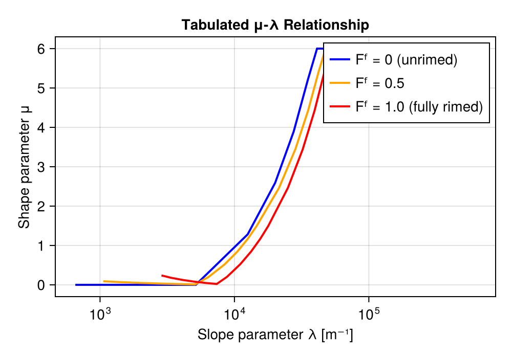
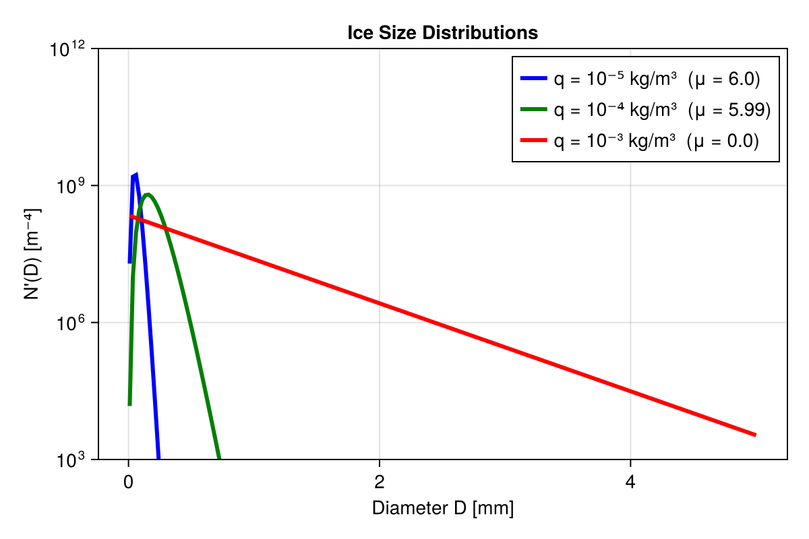
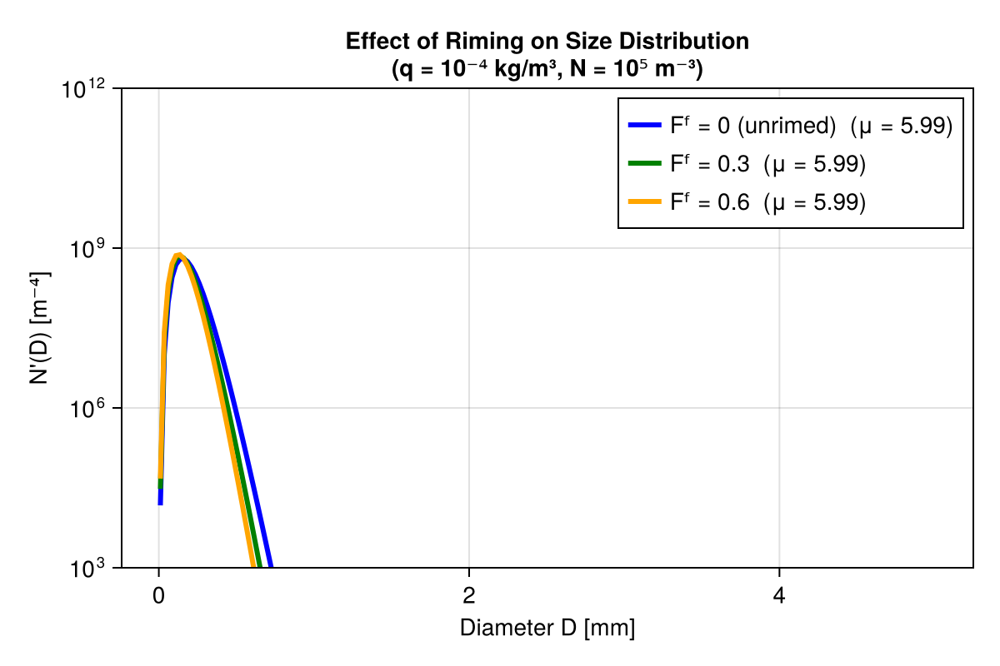

Predicted Particle Properties (P3): Theory
This page collects the background and theory behind Breeze's P3 microphysics: the physical motivation, notation, particle properties, size distribution, integral quantities, process rates, and prognostic equations. For hands-on construction, quick-start code, and visual examples, see P3 Usage in Simulations and Models.
Predicted Particle Properties (P3) Microphysics
The Predicted Particle Properties (P3) scheme represents a paradigm shift in bulk microphysics parameterization. Rather than using discrete hydrometeor categories (cloud ice, snow, graupel, hail), P3 uses a single ice category with continuously predicted properties that evolve naturally as particles grow, rime, and melt.
This implementation follows Morrison and Milbrandt (2015a) and Milbrandt et al. (2025), the predicted-liquid-fraction extension. "The P3 reference implementation" below means the published scheme as originally coded, where contrasting Breeze's choices with it makes the reasoning clearer.
Motivation
Traditional bulk microphysics schemes partition frozen hydrometeors into separate categories:
| Category | Typical Properties |
|---|---|
| Cloud ice | Small, pristine crystals |
| Snow | Aggregated crystals, low density |
| Graupel | Heavily rimed, moderate density |
| Hail | Fully frozen, ice density |
This categorical approach creates artificial boundaries. A growing ice particle must "convert" from one category to another through ad-hoc transfer terms, leading to:
- Discontinuous property changes when particles cross category thresholds
- Arbitrary conversion parameters that are difficult to constrain observationally
- Loss of information about particle history and evolution
P3 solves these problems by tracking the physical properties of ice particles directly:
- Rime mass fraction $F^f$: What fraction of particle mass is rime?
- Rime density $ρ^f$: How dense is the rime layer?
- Liquid fraction $F^l$: How much unfrozen water coats the particle?
These properties evolve continuously through microphysical processes, and particle characteristics (mass, fall speed, collection efficiency) are diagnosed from them.
Architectural choice: Breeze P3 updates tendencies, instead of prognostic variables
The P3 reference implementation is structured as a subcycle module that updates prognostic variables in place over its internal Δt: it can hard-clamp $n^i ≤ N^i_\text{max}/ρ$ after each step, zero out small-mass species and add a compensating $θ$ correction, and use $1/Δt$ relaxation rates for nucleation and saturation adjustment.
Breeze's P3 returns tendencies, which Breeze sums with advection and diffusion before time-stepping. On a grid, compute_microphysical_tendencies! (p3_driver.jl) launches one kernel that evaluates every tendency per cell and adds each straight into $G^n$; gridless callers (ParcelModels) go through microphysical_tendencies in p3_microphysical_tendencies.jl, which evaluates the same bundle once per right-hand-side evaluation. Both paths funnel into p3_tendency_compute (p3_microphysical_state.jl), which assembles the per-field tendencies from prognostic_tendencies.jl. P3 has no write access to the prognostic state and no awareness of host Δt. This produces several deliberate, documented consequences:
- Hard prognostic clamps are replaced by tendency-form relaxations. The global ice-number cap, for example, becomes a relaxation sink toward $N^i_{\max}/ρ$ over
sink_limiting_timescale(default 10 s) rather than an instantaneous cap. - Per-Δt depletion rates use a fixed timescale. Cooper nucleation and homogeneous freezing relax over
ice_nucleation_timescale/homogeneous_freezing_timescale(both 10 s by default) rather than over $1/Δt$; CCN activation uses its ownaerosol.activation_timescale(default 1 s). Every per-species sink budget is likewise sized againstsink_limiting_timescale. For a single forward update no longer than that interval, the limited P3 sinks cannot remove more than their donor reservoir. This is a rate-budget guarantee, not an exact equivalence with an in-place one-shot operator. - Latent heating is delegated to the thermodynamics formulation. The Anelastic and compressible formulations carry energy through whichever prognostic thermodynamic variable they were built with, $ρθ$ or $ρs$. P3 assembles no tendency for either.
- Negative densities are repaired by the host, not by P3. The advection operator is not positive-definite, so
update_state!applies P3'snegative_moisture_correction(aSpeciesBorrowingby default) before the rates are evaluated; see Prognostic Equations.
These choices are noted in context throughout the documentation.
Key Features of P3
Single Ice Category with Predicted Properties
Instead of discrete categories, P3 tracks a population of ice particles with a gamma size distribution
\[N'(D) = N_0\, D^μ\, e^{-λD},\]
where $D$ is the maximum particle dimension. The mass-diameter relationship $m(D)$ depends on the predicted rime properties, allowing particles to transition smoothly from pristine crystals to heavily rimed graupel. See Particle Properties for the four-regime piecewise $m(D)$ and $A(D)$ laws and Size Distribution for the closure that determines $(N_0, λ, μ)$ from prognostic moments.
Two-Moment Ice
Breeze runs the two-moment ice path, which tracks:
- Mass ($ρq^i$): Ice mass concentration (dry component; see prognostic table below).
- Number ($ρn^i$): Ice particle number concentration.
The two-moment process tables do not use an independent ice shape coordinate. The generator's $μ$–$λ$ closure remains available from Lookup Table 1 as an on-demand diagnostic.
Predicted Liquid Fraction
Milbrandt et al. (2025) extended P3 to track liquid water on ice particles. This is crucial for:
- Wet growth: Melting particles with liquid coatings.
- Shedding: Liquid water dripping from large ice.
- Refreezing: Coating that freezes into rime.
Breeze implements liquid-fraction wet growth, refreezing, and shedding. Shedding uses the PSD integral over particles with $D \ge 9$ mm (tabulated as f1pr28); see Microphysical Processes for details.
What is implemented
| Feature | Source |
|---|---|
| Four-regime piecewise mass–diameter and matching area–diameter relationships | Morrison & Milbrandt (2015a) |
| Best-number terminal velocity with air-density correction $(ρ_s/ρ)^{0.54}$ | Mitchell and Heymsfield (2005) |
| Cober–List rime density | Morrison & Milbrandt (2015a) |
| Two-moment μ–λ closure (Heymsfield 2003 fit for small particles; rime-/density-weighted relation from the lookup-table generator for larger particles) | Morrison & Milbrandt (2015a) |
| Liquid fraction prognostic variable ($ρq^{wi}$) | Milbrandt et al. (2025) |
| Wet growth and refreezing | Milbrandt et al. (2025) |
| Tabulated, size-thresholded ($D \ge 9$ mm) shedding | Milbrandt et al. (2025) |
What is not implemented
Milbrandt et al. (2021) added the sixth moment (radar reflectivity) as a third prognostic ice moment. Breeze runs two-moment ice only; the reflectivity prognostic, its reflectivity-weighted fall speed, and the Table-3 $μ$ closure are not implemented.
Milbrandt & Morrison (2016) introduced multiple free ice categories. Breeze runs a single ice category. Adding multi-category support requires an inter-category collection kernel plus the destination/merge logic; neither is present.
Breeze runs permanently in the SCF = SPF = 1 limit. The SCPF diagnostic, which diagnoses subgrid cloud cover from a bounded total-water PDF, is not implemented.
Sedimentation is routed through tracer transport rather than through adaptive substepping based on the maximum Courant number.
Breeze reads the published P3 ASCII ice lookup table, p3_lookupTable_1.dat-v6.9-2momI. Its rows carry 4-D ice-only integrals and an embedded 5-D ice–rain collection block, and the loader materializes exactly those coordinates. The ice tables are not regenerated. The rain 1D tables (mass- and number-weighted fall speed, evaporation ventilation) are tabulated at startup from Chebyshev–Gauss quadrature via tabulate_rain_from_quadrature.
Options Breeze fixes rather than exposes
These are switches the published scheme leaves configurable, but which have a single setting in Breeze.
P3 admits several autoconversion / accretion / rain self-collection options. Breeze implements one: Khairoutdinov and Kogan (2000), selected through the warm_rain_scheme keyword as KhairoutdinovKogan2000(). The scheme also sets the seed-drop mass used to convert the autoconversion mass rate into a rain number source.
Breeze holds the rain shape parameter at $μ^r = 0$. A variable-$μ^r$ closure is not implemented.
By default Breeze takes cloud droplet number from a scheme constant, cloud.number_concentration. Passing aerosol = AerosolActivation(AerosolMode()) switches on the prognostic path, which adds $ρn^{cl}$ and an unactivated-aerosol reservoir $ρn^a$ to the prognostic set.
Prognostic Variables
P3 evolves eight prognostic densities by default, and up to eleven with every option enabled. Each optional group is gated on a type, so a configuration that does not use one neither allocates nor advects it.
Cloud liquid (1–2 variables):
- $ρq^{cl}$: Cloud droplet mass concentration [kg/m³].
- $ρn^{cl}$: Cloud droplet number concentration [1/m³], prognostic only when aerosol activation is enabled. Otherwise droplet number is the scheme parameter
cloud.number_concentrationand this field does not exist.
Aerosol (0–1 variables):
- $ρn^a$: Unactivated aerosol number concentration [1/m³], allocated together with $ρn^{cl}$ when
aerosol isa AerosolActivation. Each activated droplet removes one unit from this reservoir.
Rain (2 variables):
- $ρq^r$: Rain mass concentration [kg/m³].
- $ρn^r$: Raindrop number concentration [1/m³].
Ice (5 variables):
- $ρq^i$: Dry ice mass concentration [kg/m³] (rime + deposited mass; excludes $ρq^{wi}$).
- $ρn^i$: Ice particle number concentration [1/m³].
- $ρq^f$: Rime mass concentration [kg/m³].
- $ρb^f$: Rime volume concentration [m³/m³].
- $ρq^{wi}$: Liquid water on ice [kg/m³].
Supersaturation prognostic (0–1 variables):
- $ρs^{v+l}$: Liquid supersaturation density [kg/m³] (Grabowski and Morrison (2008)). Breeze exposes a
predict_supersaturationflag onProcessRate, defaulting tofalse. Whenfalse, the field is not allocated and is absent fromprognostic_field_names; diagnostics that need local saturation use $q^v - q^{v+l}(T)$ directly. Whentrue, the bounded G&M (2008) adjustment fires before the M&G rates, shifting the local $q^v$, $q^{cl}$, and $T$ (and thus $q^{v+l}(T)$) so that $q^v - q^{v+l}$ matches the advected $s^l$. The M&G semi-analytic rates then run on this post-G&M state — the "diagnostic supersaturation" they see is $q^v_{\text{post-GM}} - q^{v+l}(T_{\text{post-GM}})$, not the host's $s^l$ field. The G&M adjustment and the end-of-step $s^l$ reset both relax oversink_limiting_timescale, so they land exactly when the host integrates with $\Delta t = \text{sink\_limiting\_timescale}$.
From these, diagnostic properties are computed:
- Rime fraction: $F^f = ρq^f / ρq^i$, where the prognostic $ρq^i$ is dry ice, so the denominator excludes the liquid coating.
- Rime density: $ρ^f = ρq^f / ρb^f$.
- Liquid fraction: $F^l = ρq^{wi} / (ρq^i + ρq^{wi})$, whose denominator is the total ice mass.
Documentation Outline
The rest of this page works through P3 theory in the following order:
- P3 Notation: Symbols and conventions used throughout these pages.
- Particle Properties: Mass-diameter and area-diameter relationships.
- Size Distribution: Gamma PSD and parameter determination.
- Integral Properties: Bulk properties from PSD integrals.
- Microphysical Processes: Process rate formulations.
- Prognostic Equations: Tendency equations and model coupling.
For a quick-start snippet and worked, visual examples, see P3 Usage in Simulations and Models.
Complete References
Core P3 Papers
- Morrison and Milbrandt (2015): Original P3 formulation with predicted rime (Part I).
- Morrison et al. (2015): Case study comparisons with observations (Part II).
- Milbrandt and Morrison (2016): Extension to multiple free ice categories (Part III).
- Milbrandt et al. (2021): Original three-moment ice in JAS (not implemented).
- Milbrandt et al. (2025): Predicted liquid fraction on ice.
Related Papers
- Milbrandt and Yau (2005): Multimoment microphysics and spectral shape parameter.
- Seifert and Beheng (2006): Two-moment cloud microphysics for mixed-phase clouds.
- Khairoutdinov and Kogan (2000): Warm rain autoconversion parameterization.
- Pruppacher and Klett (2010): Microphysics of clouds and precipitation (textbook).
P3 Notation
The Notation and conventions appendix reserves symbols for the dynamics and thermodynamics. P3 needs more symbols than that table can absorb without collisions, so its notation is scoped: the symbols defined here hold throughout the microphysics pages and the PredictedParticleProperties module, and the appendix table holds everywhere else.
The symbols this scope claims, and what each already means outside it — a dash where the appendix reserves nothing and the letter is P3's alone:
| symbol | here | elsewhere in Breeze |
|---|---|---|
| $N$ | number per unit volume [m⁻³] | grid size (Nx), acoustic substep count |
| $F$ | mass fraction of an ice component, $F^f$ and $F^l$ | forcing |
| $b$ | rime volume per unit mass [m³/kg] | buoyancy |
| $D$ | particle diameter [m] | — |
| $A$ | particle projected area [m²] | — |
| $C$ | particle capacitance [m] | surface transfer coefficients $Cᴰ$, $Cᵀ$, $Cᵛ$ |
| $V$ | terminal velocity of a single particle [m/s] | — |
| $μ$ | gamma-PSD shape parameter, never written without a species label ($μ^{cl}$, μᶜˡ) | a bare μ in kernel code is the microphysical-field tuple, and $μ$ is not the dynamic viscosity here — that is $η$ |
Conventions
$N$ counts per volume, $n$ counts per mass. An uppercase $N$ is a number density [m⁻³], a lowercase $n$ is a number mixing ratio [kg⁻¹], and the two are related by the air density, $N^x = ρ\, n^x$. The prognostic fields are $ρn^x$, the process rates are written per unit mass, and the lookup tables and collection kernels take $N^x$. The same split applies to mass: $q^x$ is a mass fraction [kg/kg] and $ρq^x$ a partial density [kg/m³].
Species are superscripts. Following the appendix convention for phase identifiers, the species label rides in the superscript — $q^{cl}$, $n^r$, $ρq^i$ — never in the subscript. The labels are cl (cloud liquid), r (rain), i (dry ice), f (rime, i.e. frozen accretion), wi (liquid coating on ice), v (vapor), and a (aerosol). Subscripts are reserved for process names, thresholds, and indices. Where a symbol carries both, the code form puts the species superscript immediately after the letter and the subscript last, so the rain PSD intercept $N_0^r$ is Nʳ₀ — the species stays adjacent to the letter it labels, as in λʳ.
Saturation is $^+$. A saturation value carries a + in the superscript, as in the appendix: $q^{v+l}$ and $q^{v+i}$ are the saturation mass fractions over planar liquid and ice, and $p^{v+}$ the saturation vapor pressure. Departures from saturation get their own symbols: $\mathscr{S}^l$ and $\mathscr{S}^i$ (𝒮) are the supersaturation ratios $p^v / p^{v+} - 1$, and $s^{v+l} = q^v - q^{v+l}$ is the liquid supersaturation in mass-fraction form, which is what the optional prognostic $ρs^{v+l}$ (ρsᵛ⁺ˡ) carries. Nothing in these pages spells "sat" or "s" as a subscript to mean saturation.
Free parameters are $\mathbb{C}$. Empirically fitted constants do not each consume a letter. They are collected in $\mathbb{C}^X$, labelled by the relation $X$ they belong to and numbered in the order they appear in it, so the fall-speed power law is $V(D) = \mathbb{C}^V_1 D^{\mathbb{C}^V_2}$ and the KK2000 autoconversion fit is $\mathbb{C}^\text{aut}$. Quantities that vary with the state are not free parameters and keep their own symbols: the mass–diameter coefficients $α$ and $β$ change from one size regime to the next, and the aggregation efficiency $E^{ii}(T)$ is a function of temperature.
Rates are dotted, tendencies are $G$. A dot marks a process rate per unit mass of air: $\dot{q}$ for mass [kg kg⁻¹ s⁻¹], $\dot{n}$ for number [kg⁻¹ s⁻¹], $\dot{b}$ for rime volume [m³ kg⁻¹ s⁻¹]. The subscript names the process and the superscript names the species the rate acts on, when the same process acts on more than one — $\dot{q}^{cl}_\text{rim}$ is the riming of cloud water and $\dot{q}^{r}_\text{rim}$ the riming of rain. The microphysical source term assembled from those rates for a prognostic field $ρX$ is $G_{ρX}$, matching the appendix use of $G$ for a tendency.
Prognostic State
The default configuration carries eight densities; the optional groups bring the maximum to eleven. See Prognostic Variables and Tendencies.
| math symbol | code | description |
|---|---|---|
| $ρq^{cl}$ | ρqᶜˡ | Cloud liquid mass density [kg/m³] |
| $ρn^{cl}$ | ρnᶜˡ | Cloud droplet number density [m⁻³]; only with aerosol activation |
| $ρq^r$ | ρqʳ | Rain mass density [kg/m³] |
| $ρn^r$ | ρnʳ | Rain number density [m⁻³] |
| $ρq^i$ | ρqⁱ | Dry ice mass density [kg/m³] (rime plus deposited mass) |
| $ρn^i$ | ρnⁱ | Ice number density [m⁻³] |
| $ρq^f$ | ρqᶠ | Rime mass density [kg/m³] |
| $ρb^f$ | ρbᶠ | Rime volume density [m³/m³] |
| $ρq^{wi}$ | ρqʷⁱ | Liquid coating on ice, mass density [kg/m³] |
| $ρq^v$ | ρqᵛ | Water vapor density [kg/m³]; the host-coupled moisture variable |
| $ρs^{v+l}$ | ρsᵛ⁺ˡ | Liquid supersaturation density [kg/m³]; only with predict_supersaturation |
| $ρn^a$ | ρnᵃ | Unactivated aerosol number density [m⁻³]; only with aerosol activation |
Size Distribution
Each species follows a gamma distribution in maximum dimension $D$.
| math symbol | code | property name | description |
|---|---|---|---|
| $N'(D)$ | Number concentration per unit diameter, $N'(D) = N_0 D^μ e^{-λD}$ [m⁻⁴] | ||
| $N_0$ | N₀ | Intercept of the gamma distribution [m⁻⁴⁻μ]; a scale factor, not a concentration. Species-labelled as Nʳ₀ where the rate needs the rain PSD explicitly | |
| $μ^{cl}$, $μ^r$ | μᶜˡ, μʳ | CloudDroplets.shape_parameter, shape | Shape parameter [-]; $μ^{cl}$ is diagnosed from $N^{cl}$ by the Liu-Daum relation configured in CloudDroplets.shape — once at construction for the prescribed number, and per cell for the prognostic one. $μ^r = 0$ is structural rather than stored: it is baked into rain_slope_parameter and the exponential quadrature kernel, and RainDrops has no shape field |
| $μ^i$ | μⁱ | On-demand ice shape diagnostic [-] read from the Table 1 closure column; not a process-table coordinate | |
| $λ^{cl}$, $λ^r$ | λᶜˡ, λʳ | Slope parameter [1/m] | |
| $λ^i$ | IceLambdaLimiter | Ice slope parameter [1/m], bounded by the mean-size limiter | |
| $M_k$ | $k$-th moment of the distribution, $M_k = N_0\,Γ(k+μ+1)/λ^{k+μ+1}$ | ||
| $\bar{D}$ | Mean diameter, $M_1/M_0$ [m] | ||
| $\bar{m}$ | Mean particle mass, $(ρq^i + ρq^{wi})/ρn^i$ [kg] |
Ice Particle Properties
| math symbol | code | property name | description |
|---|---|---|---|
| $F^f$ | Fᶠ | Rime mass fraction of dry ice [-], $F^f = ρq^f / ρq^i$ | |
| $F^l$ | Fˡ | Liquid fraction of total ice mass [-], $F^l = ρq^{wi}/(ρq^i + ρq^{wi})$ | |
| $ρ^f$ | ρᶠ | IceParticles.minimum_rime_density, maximum_rime_density | Rime density [kg/m³], $ρ^f = ρq^f / ρb^f$, bounded to [50, 900] |
| $ρ^{gr}$ | Graupel density [kg/m³], $ρ^{gr} = F^f ρ^f + (1-F^f) ρ^d$ | ||
| $ρ^i$ | Bulk ice density [kg/m³], 900, used by the mass–diameter relations | ||
| $ρ^i_\text{pure}$ | ProcessRate.pure_ice_density | Density of solid ice [kg/m³], 917, used for reflectivity and melt densification | |
| $m(D)$ | Particle mass, $m(D) = α D^β$ on each size regime [kg] | ||
| $α$, $β$ | Mass–diameter coefficient [kg/m^β] and exponent [-] of the active regime | ||
| $A(D)$ | Particle projected area [m²], $A(D) = \mathbb{C}^A_1 D^{\mathbb{C}^A_2}$ for aggregates | ||
| $C(D)$ | Particle capacitance for vapor diffusion [m] | ||
| $V(D)$ | RainDrops.fall_speed | Terminal velocity [m/s]; for rain the four-regime Gunn-Kinzer/Beard law of rain_fall_speed, whose coefficients live in RainFallSpeed, and a Best-number formulation for ice | |
| $D^{th}$ | Threshold between small spherical ice and vapor-grown aggregates [m] | ||
| $D^{gr}$ | Threshold between aggregates and graupel [m] | ||
| $D^{cr}$ | Threshold between graupel and partially rimed ice [m] |
Bulk and Integral Quantities
| math symbol | code | property name | description |
|---|---|---|---|
| $V_n$, $V_m$ | Number- and mass-weighted mean fall speeds [m/s] | ||
| $\mathcal{K}$ | A PSD-integrated collection kernel, $\int A(D) V(D) N'(D)\,dD$ | ||
| $E^{ci}$ | Eᶜⁱ | cloud_ice_collection_efficiency | Ice–cloud droplet collection efficiency [-] |
| $E^{ri}$ | Eʳⁱ | rain_ice_collection_efficiency | Ice–rain collection efficiency [-] |
| $E^{ii}(T)$ | Ice–ice aggregation efficiency [-], a function of temperature and $F^f$ | ||
| $f^{ve}$ | fᵛᵉ | Ventilation factor for vapor diffusion [-], $\mathbb{C}^\text{vent}_1 + \mathbb{C}^\text{vent}_2 \text{Re}^{1/2}\text{Sc}^{1/3}$ | |
| $Q_\text{norm}$ | Normalized ice mass, the mean particle mass $\bar{m}$ [kg]; the first lookup-table axis | ||
| $\mathcal{F}_X$ | Sedimentation flux of $ρX$ [kg m⁻² s⁻¹ or m⁻² s⁻¹] |
Empirical Warm-Phase Coefficients
Three warm-phase relations are empirical fits rather than derived expressions. Their coefficients are owned by small immutable containers reachable from the public constructors, so a calibration or sensitivity study can vary them and have the new values reach both the startup quadrature and the runtime kernels. Sixteen scalars in total.
| math symbol | code | property name | description |
|---|---|---|---|
| $a$ | CloudShape.relative_dispersion_number_coefficient | Coefficient on $N^{cl}$ in the relative-dispersion relation [m³], default $5.714 \times 10^{-10}$ | |
| $b$ | CloudShape.relative_dispersion_intercept | Intercept of the relative-dispersion relation [-], default $0.2714$ | |
| $μ^{cl}_\text{min}$ | CloudShape.minimum_shape_parameter | Lower bound on the diagnosed $μ^{cl}$ [-], default $2$ | |
| $μ^{cl}_\text{max}$ | CloudShape.maximum_shape_parameter | Upper bound on the diagnosed $μ^{cl}$ [-], default $15$ | |
| $a_i$ | RainFallSpeed.branch_velocity_scales | Three power-law velocity scales [m/s], default $(4579.5,\, 49.62,\, 17.32)$ | |
| $b_i$ | RainFallSpeed.branch_mass_exponents | Three mass exponents [-], default $(2/3,\, 1/3,\, 1/6)$ | |
| $D^t_i$ | RainFallSpeed.transition_diameters | Ordered branch boundaries [m], default $(134.43,\, 1511.64,\, 3477.84)$ μm | |
| $V_\infty$ | RainFallSpeed.plateau_velocity | Large-drop terminal-speed plateau [m/s], default $9.17$ | |
| $f_{1r}$ | RainVentilation.constant_coefficient | Still-air rain ventilation term [-], default $0.78$ | |
| $f_{2r}$ | RainVentilation.reynolds_coefficient | Coefficient on $\mathrm{Sc}^{1/3}\mathrm{Re}^{1/2}$ [-], default $0.32$ |
CloudShape is stored in CloudDroplets.shape and read by every path that diagnoses $μ^{cl}$ from a local droplet number: the construction-time diagnosis, diagnose_cloud_dsd, and immersion_freezing_cloud_rate. RainFallSpeed and RainVentilation are stored in RainDrops.fall_speed and RainDrops.ventilation, and survive the lookup-table materialization that fills in the tabulated integrals.
Deliberately not exposed as empirical free parameters: the $997$ kg m⁻³ water density that is the mass basis of the published fall-speed fit; $\pi/6$, one gram, and unit conversions; and the coefficients baked into the external ice lookup-table artifact (including the $0.65$ and $0.44$ ice ventilation pair), which belong to a separate versioned table-generator effort.
Configurable but numerical rather than empirical: NumericalFloors and the sink-limiter settings, both ProcessRate keywords, the floors reaching the startup quadrature through read_lookup_tables. Quadrature point counts, lookup-axis range and interpolation resolution are tabulate_rain_from_quadrature keywords only.
Air Properties
Diagnosed once per cell by air_transport_properties (transport_properties.jl) and passed to every rate that needs them.
| math symbol | code | description |
|---|---|---|
| $D^v$ | Dᵛ | Vapor diffusivity in air [m²/s] |
| $K^a$ | Kᵃ | Thermal conductivity of air [W/m/K] |
| $η$ | η | Dynamic viscosity of air [Pa s], from Sutherland's law |
| $ν$ | ν | Kinematic viscosity of air [m²/s], $ν = η/ρ$ |
| $\text{Sc}$ | Schmidt number, $ν / D^v$ | |
| $\text{Re}$ | Reynolds number, $V D / ν$ | |
| $ρ_\text{corr}$ | Air-density fall-speed correction, $(ρ_s/ρ)^{0.54}$, evaluated once per cell (p3_ice_lookups) |
Thermodynamic constants keep their appendix symbols — $\mathcal{L}^l$ and $\mathcal{L}^i$ for the latent heats of condensation and deposition, $c^{pd}$ for the dry-air heat capacity, $R^v$ for the vapor gas constant. The one addition is $\mathcal{L}^\text{fus} = \mathcal{L}^i - \mathcal{L}^l$, the latent heat of fusion, which the melting and wet-growth heat balances need. It is not written $\mathcal{L}^f$, since f labels rime here.
Process Rates
All rates are per unit mass of air. Where a superscript is absent, the process acts on only one species.
| process | mass | number | volume |
|---|---|---|---|
| Condensation / evaporation | $\dot{q}^{cl}_\text{cond}$, $\dot{q}^{r}_\text{cond}$, $\dot{q}^{wi}_\text{cond}$, $\dot{q}^{r}_\text{evap}$, $\dot{q}^{wi}_\text{evap}$ | $\dot{n}^{r}_\text{evap}$ | |
| CCN activation | $\dot{q}_\text{act}$ | $\dot{n}_\text{act}$ | |
| Autoconversion | $\dot{q}_\text{aut}$ | $\dot{n}^{cl}_\text{aut}$, $\dot{n}^{r}_\text{aut}$ | |
| Accretion | $\dot{q}_\text{acc}$ | ||
| Self-collection, breakup | $\dot{n}^{cl}_\text{slf}$, $\dot{n}^{r}_\text{slf}$, $\dot{n}^{r}_\text{brk}$ | ||
| Riming | $\dot{q}^{cl}_\text{rim}$, $\dot{q}^{r}_\text{rim}$ | $\dot{n}^{cl}_\text{rim}$, $\dot{n}^{r}_\text{rim}$ | |
| Above-freezing collection | $\dot{q}^{cl}_\text{col}$, $\dot{q}^{r}_\text{col}$ | $\dot{n}^{cl}_\text{col}$, $\dot{n}^{r}_\text{col}$ | |
| Deposition / sublimation | $\dot{q}_\text{dep}$, $\dot{q}_\text{sub}$ | $\dot{n}_\text{sub}$ | |
| Ice nucleation | $\dot{q}_\text{nuc}$ | $\dot{n}_\text{nuc}$ | |
| Immersion freezing | $\dot{q}^{cl}_\text{frz}$, $\dot{q}^{r}_\text{frz}$ | $\dot{n}^{cl}_\text{frz}$, $\dot{n}^{r}_\text{frz}$ | |
| Homogeneous freezing | $\dot{q}^{cl}_\text{hom}$, $\dot{q}^{r}_\text{hom}$ | $\dot{n}^{cl}_\text{hom}$, $\dot{n}^{r}_\text{hom}$ | |
| Hallett–Mossop splintering | $\dot{n}_\text{HM}$ | ||
| Aggregation | $\dot{n}_\text{agg}$ | ||
| Melting | $\dot{q}_{\text{mlt},p}$, $\dot{q}_{\text{mlt},f}$ | $\dot{n}_\text{mlt}$ | |
| Shedding | $\dot{q}_\text{shed}$ | $\dot{n}_\text{shed}$ | |
| Wet growth | $\dot{q}^{cl}_\text{wet}$, $\dot{q}^{r}_\text{wet}$, $\dot{q}_\text{wsh}$, $\dot{q}_\text{wdn}$ | $\dot{n}_\text{wsh}$ | $\dot{b}_\text{wdn}$ |
| Refreezing | $\dot{q}_\text{refr}$ | ||
| Melt densification | $\dot{b}_\text{dens}$ | ||
| Whole-particle clipping | $\dot{q}^i_\text{clip}$, $\dot{q}^f_\text{clip}$ | $\dot{b}_\text{clip}$ | |
| PSD number correction | $\dot{n}^{cl}_\text{corr}$, $\dot{n}^{r}_\text{corr}$, $\dot{n}^{i}_\text{corr}$ | ||
| Ice number cap | $\dot{n}_\text{cap}$ |
Timescales and Thresholds
| math symbol | property name | description |
|---|---|---|
| $τ_\text{sink}$ | sink_limiting_timescale | Relaxation time for every sink limiter [s], default 10 |
| $τ_\text{nuc}$ | Cooper nucleation relaxation time [s], 10 | |
| $τ_\text{act}$ | AerosolActivation.activation_timescale | Droplet activation relaxation time [s], default 1 |
| $τ_\text{hom}$ | homogeneous_freezing_timescale | Homogeneous freezing relaxation time [s] |
| $N^i_\text{max}$ | maximum_ice_number_density | Global ice number cap [m⁻³], $2 \times 10^6$ |
| $T_0$ | Freezing point, 273.15 K |
Particle Properties
Ice particles in P3 span a continuum from small pristine crystals to large rimed graupel. The mass-diameter and area-diameter relationships vary across this spectrum, depending on particle size and riming state.
The foundational particle property relationships are from Morrison & Milbrandt (2015a), Section 2.
Mass-Diameter Relationship
The particle mass $m(D)$ follows a piecewise power law that depends on maximum dimension $D$, rime fraction $F^f$, and rime density $ρ^f$. This formulation is given in Morrison and Milbrandt (2015) Eqs. 6, 7, 12, and 13.
The Four Regimes
P3 defines four diameter regimes with distinct mass-diameter relationships:
Regime 1: Small Spherical Ice ($D < D^{th}$)
Small ice particles are assumed spherical with bulk ice density (Morrison and Milbrandt (2015) Eq. 6):
\[m(D) = \frac{π}{6} ρ^i D³\]
where $ρ^i = 900$ kg/m³ is the bulk ice density used throughout the scheme. The pure-ice density (pure_ice_density, 917 kg/m³ by default) is reserved for the radar reflectivity diagnostic and the melt densification of rime.
Regime 2: Vapor-Grown Aggregates ($D^{th} ≤ D < D^{gr}$ or unrimed)
Larger particles follow an empirical power law based on aircraft observations of ice crystals and aggregates (Morrison and Milbrandt (2015) Eq. 7):
\[m(D) = α D^β\]
where $α = 0.0121$ kg/m^β and $β = 1.9$ are based on observations compiled in the supplementary material of Morrison and Milbrandt (2015). This relationship captures the fractal nature of aggregated crystals.
Regime 3: Graupel ($D^{gr} ≤ D < D^{cr}$)
When particles acquire sufficient rime, they become compact graupel with density $ρ^{gr}$ ((Morrison and Milbrandt, 2015) Eq. 13):
\[m(D) = \frac{π}{6} ρ^{gr} D³\]
The graupel density $ρ^{gr}$ depends on the rime fraction and rime density (Morrison and Milbrandt (2015) Eq. 16):
\[ρ^{gr} = F^f ρ^f + (1 - F^f) ρ^d\]
where $ρ^d$ is the density of the deposited (vapor-grown) ice component.
Regime 4: Partially Rimed ($D ≥ D^{cr}$)
The largest particles have a rimed core with unrimed aggregate extensions (Morrison and Milbrandt (2015) Eq. 12):
\[m(D) = \frac{α}{1 - F^f} D^β\]
Threshold Diameters
The transitions between regimes occur at critical diameters determined by equating masses (Morrison and Milbrandt (2015) Eqs. 8, 14, and 15):
Spherical-Aggregate Threshold $D^{th}$ (Eq. 8):
The diameter where spherical mass equals aggregate mass:
\[D^{th} = \left( \frac{6α}{π ρ^i} \right)^{1/(3-β)}\]
Aggregate-Graupel Threshold $D^{gr}$ (Eq. 15):
The diameter where aggregate mass equals graupel mass:
\[D^{gr} = \left( \frac{6α}{π ρ^{gr}} \right)^{1/(3-β)}\]
Graupel-Partial Threshold $D^{cr}$ (Eq. 14):
The diameter where graupel mass equals partially rimed mass:
\[D^{cr} = \left( \frac{6α}{π ρ^{gr} (1 - F^f)} \right)^{1/(3-β)}\]
Deposited Ice Density
The density of the vapor-deposited (unrimed) component $ρ^d$ is derived from the constraint that total mass equals rime mass plus deposited mass. The form below is algebraically equivalent to Morrison and Milbrandt (2015) Eq. 17 (which expresses $ρ^d$ directly in terms of the threshold diameters $D^{cr}$ and $D^{gr}$), rewritten here as a closed-form expression in $F^f$ and $ρ^f$:
\[ρ^d = \frac{F^f ρ^f}{(β - 2) \frac{k - 1}{(1 - F^f)k - 1} - (1 - F^f)}\]
where $k = (1 - F^f)^{-1/(3-β)}$.
The relations above are what the official P3 generator integrates when it builds the lookup tables; Breeze itself never evaluates $m(D)$ or the thresholds at runtime, it interpolates the resulting bulk quantities. See P3 Examples and Visualization for the tabulated mean diameter and bulk density plotted against mean particle mass.
Area-Diameter Relationship
The projected cross-sectional area $A(D)$ determines collection rates and fall speed. These relationships are described in Morrison and Milbrandt (2015) Section 2b (area-diameter forms are not numbered as equations in the paper).
Small Spherical Ice ($D < D^{th}$):
\[A(D) = \frac{π}{4} D²\]
Nonspherical Ice (aggregates):
\[A(D) = \mathbb{C}^A_1 D^{\mathbb{C}^A_2}\]
with the exponent $\mathbb{C}^A_2 = 1.88$ and the coefficient $\mathbb{C}^A_1 ≈ 0.1318$ m$^{0.12}$. Both are the empirical values of Mitchell (1996) for aggregates of side planes, bullets, and columns and assemblages of planar polycrystals, as adopted by Morrison and Milbrandt (2015). Mitchell (1996) quotes the coefficient in cgs as $0.2285$ cm$^{0.12}$; Breeze converts in place by multiplying with $100^{\mathbb{C}^A_2-2}$.
Graupel:
Reverts to spherical:
\[A(D) = \frac{π}{4} D²\]
Partially Rimed:
Per official P3 code, the projected area is interpolated by particle mass between the unrimed and graupel relationships, rather than a simple Fᶠ weighting:
\[A(D) = A^{ur} + \frac{m^{pr} - m^{ur}}{m^{gr} - m^{ur}} \left(A^{gr} - A^{ur}\right)\]
with $A^{ur} = \mathbb{C}^A_1 D^{\mathbb{C}^A_2}$, $A^{gr} = \frac{π}{4} D^2$, $m^{ur} = α D^β$, $m^{gr} = \frac{π}{6} ρ^{gr} D^3$, and $m^{pr} = α D^β / (1 - F^f)$ from the partially rimed mass law.
Terminal Velocity
The official P3 code computes terminal velocity using the Mitchell and Heymsfield (2005) Best-number drag formulation with the regime-dependent $m(D)$ and $A(D)$ relationships. The resulting fall speeds are stored in lookup tables and include the air-density correction $(ρ₀/ρ)^{0.54}$ following Heymsfield et al. (2007).
Breeze implements this full Best-number formulation directly in the quadrature routines, ensuring consistency with the lookup tables. For mixed-phase particles, the velocity interpolates between the ice and rain fall speeds based on liquid fraction.
Particle Density
The effective density $ρ(D)$ is defined as mass divided by the volume of a sphere with diameter $D$:
\[ρ(D) = \frac{m(D)}{(π/6) D³} = \frac{6 m(D)}{π D³}\]
This definition is convenient for comparing particles of different types and connects directly to the mass-diameter relationship.
Table 1 carries the PSD-integrated version of this quantity in its mean-density column, plotted against mean particle mass and rime fraction in P3 Examples and Visualization.
Effect of Riming
Riming dramatically affects particle properties. This is the key insight of P3 that enables continuous evolution without discrete category conversions (Morrison and Milbrandt (2015) Section 2b):
| Property | Unrimed Aggregate | Heavily Rimed Graupel |
|---|---|---|
| Mass | $α D^β$ | $(π/6) ρ^{gr} D³$ |
| Density | Low (~100 kg/m³) | High (~500 kg/m³) |
| Fall speed | Slow | Fast |
| Collection efficiency | Low | High |
Rime Density Parameterization
The rime density $ρ^f$ depends on the collection conditions during riming. The parameterization follows Cober and List (1993) as implemented in Morrison and Milbrandt (2015). The rime density is computed as a function of the impact parameter $R_\text{imp}$, which depends on droplet size, impact velocity, and temperature:
\[ρ^f = \begin{cases} (0.051 + 0.114 R_\text{imp} - 0.0055 R_\text{imp}^2) \times 1000 & R_\text{imp} \le 8 \\ 611 + 72.25 (R_\text{imp} - 8) & R_\text{imp} > 8 \end{cases}\]
Wherever the particle carries rime volume, the diagnosed rime density is bounded into [minimum_rime_density, maximum_rime_density]:
- $ρ^f_\text{min} = 50$ kg/m³ is the minimum rime density
- $ρ^f_\text{max} = 900$ kg/m³ is the maximum rime density
consistent_rime_state applies those bounds only when $ρb^f$ is non-negligible; an unrimed particle keeps the canonical $ρ^f = 0$ rather than being pushed up to $ρ^f_\text{min}$, and the table lookup clamps that 0 onto the first rime-density coordinate on the way in (see Size Distribution).
The rime density affects the graupel density $ρ^{gr}$ and thus the regime thresholds. As particles rime more heavily, they become denser and more spherical.
$R_\text{imp}$ is clamped to [1, 12] before the Cober–List fit is applied; the linear branch for $R_\text{imp} > 8$ is extended to $R_\text{imp} = 12$ so that $ρ^f = 900$ kg/m³. The lookup tables discretize $ρ^f$ on an uneven grid (50, 250, 450, 650, 900 kg/m³) and interpolate between bins; rime_density_index maps a physical $ρ^f$ onto that grid.
Summary
The P3 mass-diameter relationship captures the full spectrum of ice particle types:
- Small crystals: Dense, spherical approximation
- Aggregates: Fractal structure, low density, follows $m ∝ D^{1.9}$
- Graupel: Compact, dense from riming
- Partially rimed: Large aggregates with rimed cores
The transitions occur naturally through the regime thresholds, which depend only on the predicted rime fraction and rime density—no arbitrary conversion terms required.
References for This Section
- (Morrison and Milbrandt, 2015): Primary source for m(D), A(D), V(D) relationships
- (Morrison et al., 2015): Validation of particle property parameterizations
- (Pruppacher and Klett, 2010): Background on ice particle physics
Size Distribution
P3 assumes ice particles follow a gamma size distribution, with parameters determined from prognostic moments and empirical closure relations.
Gamma Size Distribution
The number concentration of ice particles per unit volume, as a function of maximum dimension $D$, follows (Morrison & Milbrandt (2015a) Eq. 2):
\[N'(D) = N₀ D^μ e^{-λD}\]
where:
- $N'(D)$ [m⁻⁴] is the number concentration per unit diameter
- $N₀$ [m⁻⁴⁻μ] is the intercept parameter
- $μ$ [-] is the shape parameter (≥ 0)
- $λ$ [m⁻¹] is the slope parameter
The shape parameter $μ$ controls the distribution width:
- $μ = 0$: Exponential (Marshall-Palmer) distribution
- $μ > 0$: Narrower distribution with a mode at $D = μ/λ$
This form is standard in cloud microphysics and is discussed in Milbrandt & Yau (2005) for multi-moment schemes.
Moments of the Distribution
The $k$-th moment of the size distribution is:
\[M_k = \int_0^∞ D^k N'(D)\, dD = N₀ \int_0^∞ D^{k+μ} e^{-λD}\, dD\]
Using the gamma function identity $\int_0^∞ x^{a-1} e^{-x} dx = Γ(a)$:
\[M_k = N₀ \frac{Γ(k + μ + 1)}{λ^{k+μ+1}}\]
Key Moments
Number concentration (0th moment):
\[N = M_0 = N₀ \frac{Γ(μ + 1)}{λ^{μ+1}}\]
Mean diameter (1st moment / 0th moment):
\[\bar{D} = \frac{M_1}{M_0} = \frac{μ + 1}{λ}\]
Reflectivity (6th moment), diagnosed from the PSD:
\[Z ∝ M_6 = N₀ \frac{Γ(μ + 7)}{λ^{μ+7}}\]
Shape-Slope (μ-λ) Relationship
In two-moment P3, $μ$ is diagnosed rather than set by a single global power law. Define the mean-volume diameter estimate (in mm) from the mean per-particle mass $L/N$:
\[D_{mvd} = 10^3 \left(\frac{L/N}{c_{gp}}\right)^{1/3},\]
where $c_{gp} = (π/6) ρ^{gr}$ is the coefficient in the fully rimed mass law $m(D) = c_{gp} D^3$. Then:
\[μ = \begin{cases} \text{clamp}\left(0.076 (0.01 λ)^{0.8} - 2,\ 0,\ 6\right), & D_{mvd} \le 0.2\,\text{mm} \\ \text{clamp}\left(0.25 (D_{mvd} - 0.2)\, f_ρ\, F^f,\ 0,\ μ_{max}\right), & D_{mvd} > 0.2\,\text{mm} \end{cases}\]
with
\[f_ρ = \max\left(1,\ 1 + 0.00842(\bar{ρ}-400)\right), \quad \bar{ρ} = \frac{6 c_{gp}}{π}, \quad μ_{max} = 20.\]
The first branch is the Heymsfield (2003) μ–λ fit ; the prefactor $0.076 \cdot (0.01\, λ)^{0.8}$ embeds the cm⁻¹↔m⁻¹ unit conversion of the original form. The second branch increases $μ$ with particle size and riming.
When liquid fraction is active ($F^l > 0$), the bulk density used in $D_{mvd}$ and $f_ρ$ is blended with the liquid density:
\[ρ^{gr} = (1 - F^l)\, ρ^{gr}_\text{dry} + F^l\, 1000\,\text{kg/m}^3.\]
When $F^f = 0$ the lookup-table generator additionally substitutes $ρ_{g,\text{dry}} \to ρ_\text{rime}$ (the rime-density axis of the table) because the partially-rimed regime has zero mass at that point. Within this diagnostic $ρ^f$ is floored at 50 kg/m³, the first coordinate of Table 1's rime-density axis, matching the runtime lookup's clamp of the canonical unrimed $ρ^f = 0$.
The piecewise closure above is the formula the table generator evaluates. Breeze's process-rate path neither diagnoses nor carries $μ$. The compute_ice_shape_parameter helper can read the generator's result from Table 1 on demand in the same $(\log \bar{m}, F^f, F^l, ρ^f)$ space as every other Table 1 integral.
The plots below read $λ$ and $μ$ straight out of Table 1, so they show the closure exactly as the model sees it.
using Breezeusing Breeze.Microphysics.PredictedParticlePropertiesusing SpecialFunctions: loggammausing CairoMakiep3 = PredictedParticlePropertiesMicrophysics()bulk = p3.ice.bulk# Table 1 is indexed by the mean particle mass m̄ = q/N and ice morphology."Read (λ, μ) from Table 1 and rebuild N₀ = N λ^(μ+1) / Γ(μ+1)."function psd_from_table(p3, q, N, Fᶠ, ρᶠ; Fˡ = 0.0) bulk = p3.ice.bulk log_m̄ = log10(q / N) λ = bulk.slope(log_m̄, Fᶠ, Fˡ, ρᶠ) μ = bulk.shape(log_m̄, Fᶠ, Fˡ, ρᶠ) log_N₀ = log(N) + (μ + 1) * log(λ) - loggamma(μ + 1) return (; λ, μ, log_N₀)endN_ice = 1e5q_values = 10 .^ range(-7, -2, length=80)fig = Figure(size=(500, 350))ax = Axis(fig[1, 1], xlabel = "Slope parameter λ [m⁻¹]", ylabel = "Shape parameter μ", xscale = log10, title = "Tabulated μ-λ Relationship")for (Fᶠ, label, color) in [(0.0, "Fᶠ = 0 (unrimed)", :blue), (0.5, "Fᶠ = 0.5", :orange), (1.0, "Fᶠ = 1.0 (fully rimed)", :red)] psds = [psd_from_table(p3, q, N_ice, Fᶠ, 500.0) for q in q_values] lines!(ax, getfield.(psds, :λ), getfield.(psds, :μ), linewidth=2, color=color, label=label)endaxislegend(ax, position=:rt)fig
Dry Size Distribution (Liquid-Fraction Active)
When $F^l > 0$, the official P3 generator solves a separate dry PSD from the dry-only ice mass $q^i$ for the four liquid-fraction melting integrals (see Cholette et al. (2019) for the rationale). Deposition / sublimation, collection, sedimentation, and reflectivity use the wet PSD. Breeze inherits that split through the tables: the melting rate reads the dry-PSD f1pr24–f1pr27 columns, while deposition / sublimation reads the wet-PSD f1pr05 / f1pr14 pair.
The dry parameters follow from rescaling the wet ones so the mass moment matches $q_\text{dry} = q_\text{total}(1 - F^l)$:
\[λ_d = λ\,(1-F^l)^{-1/β},\qquad N_{0,d} = N_0\,(λ_d/λ)^{μ+1},\]
with $β$ the effective mass–diameter exponent of the state. At $F^l = 0$ the dry and wet distributions coincide. Breeze never evaluates this rescaling at runtime — it reads the dry-PSD columns straight out of the table.
Determining Distribution Parameters
Given prognostic moments $L$ (mass concentration) and $N$ (number concentration), plus predicted rime properties $F^f$ and $ρ^f$, we solve for the distribution parameters $(N₀, λ, μ)$.
In the official P3 lookup tables, rime fraction $F^f$ and liquid fraction $F^l$ are each tabulated on 4 discrete nodes ($\{0, 1/3, 2/3, 1\}$) and interpolated during lookup.
The Mass-Number Ratio
The ratio of ice mass to number concentration depends on the distribution parameters:
\[\frac{L}{N} = \frac{\int_0^∞ m(D) N'(D)\, dD}{\int_0^∞ N'(D)\, dD}\]
For a power-law mass relationship $m(D) = α D^β$, this simplifies to:
\[\frac{L}{N} = α \frac{Γ(β + μ + 1)}{λ^β Γ(μ + 1)}\]
However, P3 uses a piecewise mass-diameter relationship with four regimes (see Particle Properties), so the integral must be computed over each regime separately.
Lambda Solver
Finding $λ$ requires solving:
\[\log\left(\frac{L}{N}\right) = \log\left(\frac{\int_0^∞ m(D) N'(D)\, dD}{\int_0^∞ N'(D)\, dD}\right)\]
This is a nonlinear equation in $λ$, since $μ = μ(λ)$. In the official P3 code, $λ$ is determined during lookup-table generation by scanning over a fixed range (roughly 10–10⁷ m⁻¹) and selecting the value that best matches L/N for the current $μ$ and piecewise $m(D)$.
Breeze never needs ice $λ$ per grid point, because every Table 1 integral is indexed by the mean particle mass $\log \bar{m}$ rather than by $λ$, so the slope is already baked into the tabulated values. Table 1 does carry a slope-parameter column, which Breeze loads for diagnostics (the plots on this page) but no rate reads. Rain is the exception: its distribution is exponential with $μ^r = 0$, so $λ^r$ follows in closed form from $q^r/n^r$ via rain_slope_parameter, and rain integrals are indexed by $\log λ^r$.
q_ice = 1e-4 # Ice mass concentration [kg/m³]N_ice = 1e5 # Ice number concentration [1/m³]rime_fraction = 0.0rime_density = 400.0psd = psd_from_table(p3, q_ice, N_ice, rime_fraction, rime_density)println("Tabulated distribution parameters:")println(" log N₀ = $(round(psd.log_N₀, digits=2))")println(" λ = $(round(psd.λ, sigdigits=3)) m⁻¹")println(" μ = $(round(psd.μ, digits=2))")Tabulated distribution parameters:
log N₀ = 78.98
λ = 39700.0 m⁻¹
μ = 5.99Computing $N₀$
Once $λ$ and $μ$ are known, the intercept follows from a normalization integral. Inverting the zeroth moment normalizes on number,
\[N₀ = \frac{N λ^{μ+1}}{Γ(μ + 1)},\]
which is what psd_from_table above evaluates. The table generator instead normalizes on mass:
\[N₀ = \frac{L}{\int_0^∞ m(D)\, D^μ e^{-λD}\, dD}\]
The two coincide whenever $λ$ satisfies the L/N constraint above, since that constraint is exactly the statement that the two normalizations agree. They part company only where the mean-diameter limiter clamps $λ$: normalizing on mass keeps $L$ exact and lets the represented number concentration absorb the adjustment — P3's own policy, which adjusts $N$ to keep the mean particle size physical — whereas normalizing on number would preserve $N$ and misstate the mass.
Visualizing Size Distributions
# Plot size distributions for different q/N ratiosfig = Figure(size=(600, 400))ax = Axis(fig[1, 1], xlabel = "Diameter D [mm]", ylabel = "N'(D) [m⁻⁴]", yscale = log10, title = "Ice Size Distributions")D_mm = range(0.01, 5, length=200)D_m = D_mm .* 1e-3N_ice = 1e5for (q, q_label, color) in [(1e-5, "q = 10⁻⁵ kg/m³", :blue), (1e-4, "q = 10⁻⁴ kg/m³", :green), (1e-3, "q = 10⁻³ kg/m³", :red)] psd = psd_from_table(p3, q, N_ice, 0.0, 400.0) N_D = @. exp(psd.log_N₀ + psd.μ * log(D_m) - psd.λ * D_m) label = q_label * " (μ = $(round(psd.μ, digits=2)))" lines!(ax, D_mm, N_D, label=label, color=color)endaxislegend(ax, position=:rt)ylims!(ax, 1e3, 1e12)fig
Effect of Rime Fraction
Riming changes particle mass at a given size, which affects the inferred distribution:
fig = Figure(size=(600, 400))ax = Axis(fig[1, 1], xlabel = "Diameter D [mm]", ylabel = "N'(D) [m⁻⁴]", yscale = log10, title = "Effect of Riming on Size Distribution\n(q = 10⁻⁴ kg/m³, N = 10⁵ m⁻³)")q_ice = 1e-4N_ice = 1e5for (Ff, Ff_label, color) in [(0.0, "Fᶠ = 0 (unrimed)", :blue), (0.3, "Fᶠ = 0.3", :green), (0.6, "Fᶠ = 0.6", :orange)] psd = psd_from_table(p3, q_ice, N_ice, Ff, 500.0) N_D = @. exp(psd.log_N₀ + psd.μ * log(D_m) - psd.λ * D_m) label = Ff_label * " (μ = $(round(psd.μ, digits=2)))" lines!(ax, D_mm, N_D, label=label, color=color)endaxislegend(ax, position=:rt)ylims!(ax, 1e3, 1e12)fig
Mass Integrals with Piecewise m(D)
The challenge in P3 is that the mass-diameter relationship is piecewise (see Morrison & Milbrandt (2015a) Eqs. 6, 7, 12, and 13):
\[\int_0^∞ m(D) N'(D)\, dD = \sum_{i=1}^{4} \int_{D_{i-1}}^{D_i} a_i D^{b_i} N'(D)\, dD\]
Each piece has the form:
\[\int_{D_1}^{D_2} a D^b N₀ D^μ e^{-λD}\, dD = a N₀ \int_{D_1}^{D_2} D^{b+μ} e^{-λD}\, dD\]
Using incomplete gamma functions:
\[\int_{D_1}^{D_2} D^k e^{-λD}\, dD = \frac{1}{λ^{k+1}} \left[ Γ(k+1, λD_1) - Γ(k+1, λD_2) \right]\]
where $Γ(a, x) = \int_x^∞ t^{a-1} e^{-t} dt$ is the upper incomplete gamma function.
Numerical Stability
All computations are performed in log space for numerical stability:
\[\log\left(\int_{D_1}^{D_2} D^k e^{-λD}\, dD\right) = -(k+1)\log(λ) + \log Γ(k+1) + \log(q_1 - q_2)\]
where $q_i = Γ(k+1, λD_i) / Γ(k+1)$ is the regularized incomplete gamma function.
Summary
The P3 size distribution closure proceeds as:
- Prognostic moments: $L$ and $N$ are carried by the model
- Rime properties: $F^f$ and $ρ^f$ determine the mass-diameter relationship
- Slope: $λ$ is absorbed into the tables, which the generator indexes by mean particle mass $\bar{m} = L/N$; the model path interpolates on $\log \bar{m}$ and never solves for ice $λ$ itself
- μ diagnosis: a Table 1 lookup — the piecewise μ(λ) closure evaluated at table-generation time and stored as a column, not re-solved per grid point
- Normalization: the generator fixes the intercept $N₀$ from the mass integral, so $L$ is preserved even where the $λ$ limiter binds. Work in $\log N₀$ rather than $N₀$: its m^-(4+μ) units put it beyond Float32 range for narrow distributions of small particles
This provides the complete size distribution needed for computing microphysical rates.
References for This Section
- (Morrison and Milbrandt, 2015): PSD formulation and μ-λ relationship (Sec. 2b)
- (Milbrandt and Yau, 2005): Multimoment bulk microphysics and shape parameter analysis
- (Heymsfield, 2003): Ice size distribution observations used for μ-λ fit
- (Cholette et al., 2019): Predicted-liquid-fraction extension and dry-PSD branch for melting/deposition
Integral Properties
Bulk microphysical rates require population-averaged quantities computed by integrating over the particle size distribution. P3 defines numerous integral properties organized by physical concept.
Most ice-side integrals are pre-computed offline and stored in the published P3 ASCII lookup table, which Breeze loads directly rather than regenerating. The 1D rain integrals (mass- and number-weighted fall speeds, evaporation ventilation) are tabulated at startup inside Breeze from Chebyshev–Gauss quadrature evaluators in rain_quadrature.jl. The integral formulations are from:
- Morrison & Milbrandt (2015a): Fall speed, ventilation, collection
General Form
All integral properties have the form:
\[\langle X \rangle = \frac{\int_0^∞ X(D) N'(D)\, dD}{\int_0^∞ W(D) N'(D)\, dD}\]
where $X(D)$ is the quantity of interest and $W(D)$ is a weighting function (often unity or particle mass).
Fall Speed Integrals
Terminal velocity determines sedimentation rates. P3 computes two weighted fall speeds, the number- and mass-weighted forms (see Morrison & Milbrandt (2015a) Section 2b for the underlying $V(D)$ formulation; the integrated fall speeds are stored in p3_lookupTable_1.dat-v*).
Terminal Velocity Formulation
Individual particle fall speed follows the Mitchell and Heymsfield (2005) Best number formulation, which relates fall speed to particle mass, projected area, and air properties. The formulation accounts for the transition from Stokes to turbulent flow regimes and includes surface roughness effects. A density correction factor $(ρ₀/ρ)^{0.54}$ is applied following Heymsfield et al. (2007).
For mixed-phase particles (with liquid fraction $F^l$), the fall speed is linearly interpolated between the ice fall speed and the rain fall speed:
\[V(D) = F^l V^r(D) + (1 - F^l) V^i(D)\]
The fall speed depends on the mass-diameter and area-diameter relationships, which vary across the four particle regimes (see Particle Properties).
Rain Terminal Velocity
Rain does not use the Best-number formulation. rain_fall_speed evaluates the four-regime Gunn-Kinzer/Beard fit,
\[V^r(D) = \begin{cases} a_1\, \hat{m}^{b_1} & D \le D^t_1 \\ a_2\, \hat{m}^{b_2} & D^t_1 < D < D^t_2 \\ a_3\, \hat{m}^{b_3} & D^t_2 \le D < D^t_3 \\ V_\infty & D \ge D^t_3 \end{cases}\]
where $\hat{m} = m(D)/(1\,\text{g})$ is the drop mass in grams, evaluated at the $997$ kg m⁻³ water density the fit was derived with. The first branch is the Stokes-drag regime below $D \approx 100$ μm and the last is the terminal-velocity plateau above $D \approx 3.5$ mm. All ten coefficients live in RainFallSpeed (see Empirical Warm-Phase Coefficients), and the same configured law feeds all three startup rain integrals: the mass-weighted velocity, the number-weighted velocity, and the velocity-diameter integral used by evaporation.
Number-Weighted Fall Speed
\[V_n = \frac{\int_0^∞ V(D) N'(D)\, dD}{\int_0^∞ N'(D)\, dD}\]
This represents the average fall speed of particles and governs number flux:
\[\mathcal{F}_{ρn^i} = -V_n\, ρn^i\]
Mass-Weighted Fall Speed
\[V_m = \frac{\int_0^∞ V(D) m(D) N'(D)\, dD}{\int_0^∞ m(D) N'(D)\, dD}\]
This governs mass flux:
\[\mathcal{F}_{ρq^i} = -V_m\, ρq^i\]
Deposition/Sublimation Integrals
Vapor diffusion to/from ice particles is enhanced by air flow around falling particles.
Ventilation Factor
The ventilation factor $f_v$ accounts for enhanced mass transfer:
\[f_v = \mathbb{C}^\text{vent}_1 + \mathbb{C}^\text{vent}_2 \text{Re}^{1/2} \text{Sc}^{1/3}\]
where:
- $\text{Re} = V D / ν$ is the Reynolds number
- $\text{Sc} = ν / D^v$ is the Schmidt number
- $\mathbb{C}^\text{vent}$ are the empirical ventilation coefficients from (Hall and Pruppacher, 1976)
Ventilation Integrals
IceDeposition (ice_properties.jl) holds two wet-PSD ventilation components for deposition / sublimation and four dry-PSD components for liquid-fraction melting:
Field of p3.ice.deposition | Description | Integration / Routing | Table column |
|---|---|---|---|
small_ice_ventilation_constant | Constant melting component | $D \le D_\text{crit}$; meltwater goes to rain | f1pr24 |
small_ice_ventilation_reynolds | Re-dependent melting component | $D \le D_\text{crit}$; meltwater goes to rain | f1pr25 |
large_ice_ventilation_constant | Constant melting component | $D > D_\text{crit}$; meltwater stays on ice | f1pr26 |
large_ice_ventilation_reynolds | Re-dependent melting component | $D > D_\text{crit}$; meltwater stays on ice | f1pr27 |
ventilation | Constant deposition / sublimation component | Wet PSD, all sizes | f1pr05 |
ventilation_enhanced | Re-dependent deposition / sublimation component | Wet PSD, $D \ge 100$ μm | f1pr14 |
The $D_\text{crit}$ split controls where meltwater is routed. It is distinct from the 100 μm Hall-Pruppacher ventilation transition: below 100 μm only the constant coefficient contributes, while larger particles also contribute to the Re-dependent component. Breeze's melting rate reads f1pr24–f1pr27; dry-ice deposition / sublimation reads the wet-PSD f1pr05 / f1pr14 pair (see Size Distribution). The f1pr05 / f1pr14 pair is read once per cell and shared by the vapor relaxation coefficient and the wet-growth capacity, which apply their own Schmidt-number corrections $\text{Sc}^{1/3}\sqrt{ρ_\text{corr}}/\sqrt{ν}$ (at the thermodynamic and the dynamics air density, respectively).
Bulk Property Integrals
Population-averaged properties for radiation, radar, and diagnostics.
Effective Radius
Important for radiation parameterizations. Following the Francis et al. (1994) / Fu (1996, Eq. 3.11 in J. Climate) definition:
\[r_\text{eff} = \frac{3}{4\, ρ_i^*} \frac{\int_0^∞ m(D)\, N'(D)\, dD}{\int_0^∞ A(D)\, N'(D)\, dD},\]
with $ρ_i^* = 916.7$ kg/m³. With liquid fraction active the integrands include the $F^l$-blended mass and projected area (i.e. $m = (1-F^l) m_\text{ice} + F^l\, (π/6)\, ρ_w D^3$ and $A = (1-F^l) A_\text{ice} + F^l\, (π/4) D^2$).
Mean Diameter
Mass-weighted mean particle size:
\[D_m = \frac{\int_0^∞ D \cdot m(D) N'(D)\, dD}{\int_0^∞ m(D) N'(D)\, dD}\]
Mean Density
Mass-weighted particle density:
\[ρ_m = \frac{\int_0^∞ ρ(D) m(D) N'(D)\, dD}{\int_0^∞ m(D) N'(D)\, dD}\]
Reflectivity
Radar reflectivity factor. The pure $D^6$ closed form
\[Z_\text{mono} = \int_0^∞ D^6 N'(D)\, dD = N₀ \frac{Γ(μ + 7)}{λ^{μ+7}}\]
applies only to a single power-law mass regime. In P3 the tabulated reflectivity column integrates the equal-volume $D_\text{eq}^6$ over the full piecewise $m(D)$ (i.e. $(6/(π\, ρ_i^*))^2 m(D)^2$ per particle, with $ρ_i^* = 917$ kg/m³); for partially melted particles it switches to a Rayleigh–Mie wet-ice mixing rule. The runtime $Z_i$ is recomputed via the active hybrid path $Z^i = G(μ^i)\, M_3^2 / n^i$ rather than from this monomial closed form.
Collection Integrals
Collection processes (aggregation, riming) require integrals over collision kernels.
Aggregation
The collection kernel for ice-ice aggregation is:
\[\mathcal{K}(D_1, D_2) = E^{ii} \frac{π}{4} (D_1 + D_2)^2 |V(D_1) - V(D_2)|\]
The aggregation rate integral:
\[\mathcal{K}_\text{agg} = \int_0^∞ \int_0^∞ \mathcal{K}(D_1, D_2) N'(D_1) N'(D_2)\, dD_1 dD_2\]
Ice-Cloud Collection (Riming)
\[\dot{q}^{cl}_\text{rim} = E^{ci} q^{cl} \int_0^∞ A(D) V(D) N'(D)\, dD\]
Ice-Rain Collection
Unlike cloud collection, this depends on the rain PSD as well, so it is a double integral over both distributions and needs the rain slope parameter as an extra table coordinate:
\[\mathcal{K}^{ri} = \int_0^∞ \!\! \int_0^∞ \frac{π}{4} (D^i + D^r)^2\, |V(D^i) - V(D^r)|\, N^{i\prime}(D^i)\, N^{r\prime}(D^r)\, dD^r\, dD^i .\]
The mass and number forms (table columns f1pr08, f1pr07) are stored as $\log_{10}$ values and exponentiated at runtime. They live in the 5-D rain-ice block of Lookup Table 1 rather than the 4-D ice-only block, and both share the same $(\log \bar{m}, \log λ^r, F^f, F^l, ρ^f)$ axes, so the interpolation indices are computed once per lookup.
Lambda Limiter Integrals
To prevent unphysical size distributions, P3 limits the slope parameter $λ$ based on physical constraints. IceLambdaLimiter (ice_properties.jl) holds the two tabulated bounds:
Field of p3.ice.lambda_limiter | Purpose | Table column |
|---|---|---|
small_q | Upper bound on λ (prevents unrealistically small particles) | f1pr09 |
large_q | Lower bound on λ (prevents unrealistically large particles) | f1pr10 |
Rather than clamping $n^i$ against these bounds in place, Breeze diagnoses the bounded number and feeds the difference back as the $\dot{n}^{i}_\text{corr}$ relaxation tendency described in Prognostic Equations.
Tabulation
For efficiency in simulations, integrals are organized into two table families, both held in p3_lookupTable_1.dat-v6.9-2momI.
- Table 1 — the 4-D ice-only block: fall speed, ventilation, bulk, cloud-collection, aggregation, and lambda-limiter integrals, on $(\log \bar{m}, F^f, F^l, ρ^f)$ axes.
- Table 2 — the 5-D ice–rain collection block embedded later in the same file, which adds $\log λ^r$ as a coordinate.
Every Table 1 column shares the axes $(\log \bar{m}, F^f, F^l, ρ^f)$, so a cell brackets that coordinate once for the bounded ice population (p3_ice_lookups, carried as a P3IceLookups together with $ρ_\text{corr}$ and the two deposition ventilation values) and every ice-side rate reads its column at that bracket. The λ limiter and mean density are indexed by the pre-limiter number and share a second bracket (diagnostic_ice_bracket); Table 2, with its extra $\log λ^r$ axis, is bracketed on its own. The mass coordinate is clamped to the table's axis (min ≈ 1.56 × 10⁻¹⁵ kg per particle), not to the bulk minimum_mass_mixing_ratio.
using Breeze# The default constructor reads the P3 ASCII lookup tables# (downloaded automatically on first use).p3 = PredictedParticlePropertiesMicrophysics()fs = p3.ice.fall_speedprintln("Tabulated fall speed integrals from the P3 lookup tables:")println(" Number-weighted: $(typeof(fs.number_weighted))")println(" Mass-weighted: $(typeof(fs.mass_weighted))")Tabulated fall speed integrals from the P3 lookup tables:
Number-weighted: Breeze.Microphysics.PredictedParticleProperties.RimeDensityIndexedTable4D{Oceananigans.Utils.TabulatedFunction{4, Nothing, Array{Float64, 4}, NTuple{4, Tuple{Float64, Float64}}, NTuple{4, Float64}}}
Mass-weighted: Breeze.Microphysics.PredictedParticleProperties.RimeDensityIndexedTable4D{Oceananigans.Utils.TabulatedFunction{4, Nothing, Array{Float64, 4}, NTuple{4, Tuple{Float64, Float64}}, NTuple{4, Float64}}}Summary
P3 organises its integral properties by concept; the actual column count in the 2-moment ice file (p3_lookupTable_1.dat-v6.9-2momI) is 21. The ice–rain collection integrals sit in the separate 5-D block of the same file.
At runtime each ice-side integral is read from the corresponding column of that ASCII lookup table; the rain 1D tables are tabulated at startup inside Breeze using Chebyshev–Gauss quadrature in rain_quadrature.jl. The quadrature evaluators in Breeze.Utils.chebyshev_gauss_nodes_weights provide the nodes and weights; integrals are evaluated as compensated sums of the integrand on those nodes.
References for This Section
- (Morrison and Milbrandt, 2015): Fall speed, ventilation, collection integrals (Section 2b and Appendix C)
- (Hall and Pruppacher, 1976): Ventilation factor coefficients
Microphysical Processes
This section documents the process rate formulations as they are implemented in Breeze, with explicit notes wherever Breeze departs from the published P3 scheme.
The bulk of the implementation lives in:
process_rates.jl— top-level rate assembly, sink limiting, and whole-particle clipping.prognostic_tendencies.jl— per-fieldtendency_ρ*assembly from those rates.coupled_saturation_adjustment.jl— the shared semi-analytic vapor balance (cloud / rain / ice / coated-ice condensation, evaporation, deposition, sublimation).rain_process_rates.jlandwarm_rain_schemes.jl— warm-rain rates and the KK2000 scheme selector.ccn_activation_rates.jlandaerosol_activation.jl— prognostic droplet activation.ice_nucleation_rates.jl— Cooper deposition nucleation, immersion freezing, homogeneous freezing, Hallett–Mossop splintering.melting_rates.jl— heat-balance melting (with optional Fˡ split).riming_rates.jl,ice_properties.jl,ice_aggregation_rates.jl— riming, above-freezing collection, and aggregation.ice_properties.jl— ice–rain collection tables.wet_ice_processes.jl— Cober–List rime density, shedding, wet growth, refreezing.
Process Map
The following block diagram summarises the active mass-flow paths between species in a single ice category. Number-only paths (self-collection, breakup, aggregation, splintering) are noted in the per-section text.
┌─────────────┐ ┌─────────────┐
│ Vapor qᵛ │ │ Liquid on │
└──────┬──────┘ │ ice qʷⁱ │
│ └──┬───┬───┬──┘
condensation │ deposition / sublimation │ │ │
▼ ▲ │ │ │ partial melt
┌──────────┐ │ │ │ │ wet growth
│ Cloud │ riming │ │ │ │
│ qᶜˡ ├──────────────────►│ │ │ │ shedding
└────┬─────┘ │ │ │ ▼
accretion │ autoconversion │ │ │ ┌──────────┐
▼ │ │ │ │ Ice qⁱ │
┌──────────┐ ice–rain collect. │ │ │ │ rime qᶠ │
│ Rain ├────────────────────►│ │ │ │ vol bᶠ │
│ qʳ, nʳ │ complete melt │ │ │ │ │
└────┬─────┘ ◄───────────────────┘ │ │ └─┬────┬───┘
│ rain evaporation │ │ │ │
└──── self-collection / breakup◄┘ │ │ │ refreeze
▲ │ │
└───┴────┘Warm-Rain Microphysics
Autoconversion, accretion, rain self-collection, and cloud self-collection all dispatch on p3.warm_rain_scheme. Breeze implements one scheme, KhairoutdinovKogan2000; the equations below are that branch.
Breeze applies all warm-rain rates to the grid-mean state. A subgrid formulation would scale them by in-cloud and in-precipitation fractions; with no subgrid fraction prognostics in Breeze those factors are dropped, equivalent to SCF = SPF = 1 and SPF_clr = 0.
Autoconversion (KK2000)
Cloud droplets coalesce to form rain following Khairoutdinov and Kogan (2000):
\[\dot{q}_\text{aut} = \mathbb{C}^\text{aut}_1\, (q^{cl})^{\mathbb{C}^\text{aut}_2}\, \left(\frac{N^{cl}}{N^{cl}_\text{ref}}\right)^{\mathbb{C}^\text{aut}_3},\]
with the runtime defaults $\mathbb{C}^\text{aut} \approx (0.355, 2.47, -1.79)$ (the first entry is $1350 \cdot 100^{-1.79}$), and the in-cloud cloud-water threshold $q_\text{small,1} = 10^{-8}$ kg/kg below which the rate is gated to zero. $N^{cl}$ is the cloud-droplet number concentration in m⁻³ and $N^{cl}_\text{ref} = 10^8$ m⁻³ (= 100 cm⁻³). Breeze's $(\mathbb{C}^\text{aut}_1, N^{cl}_\text{ref})$ pair is a unit-rescaled equivalent of the original KK2000 form $1350\, (q^{cl})^{2.47}\, N^{cl}[\text{cm}^{-3}]^{-1.79}$.
The autoconversion mass rate also sets the rain number source, through the scheme's seed-drop mass: a 25 μm-radius drop for KK2000 (initial_rain_drop_mass). The matching cloud number sink is $\dot{q}_\text{aut}\, N^{cl}/q^{cl}$.
Accretion (KK2000)
\[\dot{q}_\text{acc} = \mathbb{C}^\text{acc}_1\, (q^{cl}\, q^r)^{\mathbb{C}^\text{acc}_2},\]
with $\mathbb{C}^\text{acc} = (67, 1.15)$.
Rain self-collection and breakup
Number-only term, modeling the balance between large drops collecting smaller ones and very large drops breaking up. The KK2000 self-collection coefficient is combined with a Verlinde and Cotton (1993)-style breakup multiplier:
\[\dot{n}^r_\text{slf} = \mathbb{C}^\text{slf}\, ρ\, q^r\, n^r,\]
with $\mathbb{C}^\text{slf} = 5.78$ m³ kg⁻¹ s⁻¹. A breakup multiplier modifies this rate by $f_\text{brk}$:
\[f_\text{brk} = \begin{cases} 1 & D^r < D_\text{th} \\ 2 - \exp\!\left[κ_\text{br}\,(D^r - D_\text{th})\right] & D^r \ge D_\text{th}, \end{cases}\]
where $D^r = 1/λ^r$ (for an exponential PSD this is proportional to but not equal to the mass-mean diameter), $D_\text{th} = 280$ μm, and $κ_\text{br} = 2300$ m⁻¹. Above the threshold the multiplier becomes negative, i.e. breakup outweighs self-collection.
Physically this is a single signed rate, so Breeze reports the two directions separately for diagnostics but nets them back into one signed term before the rain-number limiter runs — rescaling only the sink half would leave breakup at full strength against a limited sink and manufacture rain number. The netted term is excluded from every limiter rescale list.
Rain condensation and evaporation
The same coupled saturation-adjustment formula handles both signs. When the rain DSD is supersaturated, vapor condenses onto rain; when subsaturated, rain evaporates to vapor. Breeze carries both directions in the one signed rain term that coupled_saturation_adjustment_rates returns, built from the relaxation coefficient rain_vapor_relaxation_coefficient; rain_evaporation_rate supplies the underlying ventilation-weighted diffusional growth rate. Below cloud base, rain evaporates into subsaturated air following the ventilation-enhanced vapor diffusion equation (Morrison & Milbrandt (2015a) appendix C, section b; Pruppacher and Klett (1997)):
\[\dot{q}^r_\text{evap} = 2π\,N^r_0\,ρ\,D^v\,\mathscr{S}^l\, \left[\frac{f_{1r}\, Γ(μ^r+2)}{(λ^r)^{μ^r+2}} + f_{2r}\,\sqrt{ρ/η}\,\text{Sc}^{1/3}\,I_{VD}\right], \qquad N^r_0 = \frac{n^r (λ^r)^{μ^r+1}}{Γ(μ^r+1)},\]
with $f_{1r}$ and $f_{2r}$ read from RainDrops.ventilation (a RainVentilation, defaults $0.78$ and $0.32$), and $I_{VD} = ∫ D \sqrt{V(D)\,D}\, e^{-λ^r D}\, \mathrm{d}D$ the velocity–diameter integral over the rain DSD, tabulated as RainDrops.evaporation by RainVelocityDiameterIntegral. At $μ^r = 0$ this is what rain_ventilation_integral assembles: $N^r_0 = n^r λ^r$ and a bracket of $f_{1r}/(λ^r)^2 + f_{2r}\sqrt{ρ/η}\, \text{Sc}^{1/3} I_{VD}$.
Only $I_{VD}$ is tabulated. Neither ventilation coefficient enters that table, and neither does $ν$, so both stay configurable and are assembled at runtime by rain_ventilation_integral — which serves rain evaporation and the coupled saturation-adjustment relaxation coefficient alike.
The number tendency follows the proportionality $\dot{n}^r_\text{evap} = (n^r/q^r)\, \dot{q}^r_\text{evap}$, which preserves the mean drop mass.
Ice Nucleation
Deposition / condensation-freezing nucleation (Cooper)
Active when $T < T_\text{nuc} = 258.15$ K ($-15°$C) and the ice supersaturation $\mathscr{S}^i \ge \mathscr{S}^i_\text{nuc}$ (default 5%). Cooper (1986):
\[n_\text{Cooper} = c_\text{nuc}\, \exp\!\left[0.304\,(T_0 - T)\right]\, \rho^{-1}\quad [\text{kg}^{-1}],\]
with $c_\text{nuc} = 5\,\text{m}^{-3}$ (i.e. $0.005$ L⁻¹). The equilibrium ice number is capped at the global maximum:
\[n_\text{eq} = \min\!\left(n_\text{Cooper},\; N_\text{max}/ρ\right),\qquad N_\text{max} = 10^5\,\text{m}^{-3}.\]
An instantaneous rate $(n_\text{eq} - n^i)/Δt$ would require the host Δt, so Breeze uses a fixed-timescale relaxation toward $n_\text{eq}$ instead:
\[\dot{n}_\text{nuc} = \max\!\left(0,\, \frac{n_\text{eq} - n^i}{τ_\text{nuc}}\right), \qquad τ_\text{nuc} = 10\;\text{s}.\]
The mass rate is $\dot{q}_\text{nuc} = m_{i0}\, \dot{n}_\text{nuc}$ with $m_{i0} = (4π/3)\, ρ_i\, (1\,μ\text{m})^3$ and $ρ_i = 900$ kg/m³.
A subcycling implementation can use $1/Δt$ because it knows its own Δt; Breeze's tendency-only P3 does not see the host Δt and falls back to a fixed 10 s relaxation. For $Δt \ll 10$ s this under-produces and for $Δt \gg 10$ s it over-produces relative to a Δt-paced rate.
Global ice-number cap
Independent of the post-nucleation cap $N_\text{max} = 10^5$ m⁻³ above, Breeze enforces a per-cell global ice-number relaxation toward $N^i_\text{max} =$ maximum_ice_number_density $= 2 \times 10^6$ m⁻³:
\[\dot{n}_\text{cap} = \frac{\max(0,\; n^i - N^i_\text{max}/ρ)}{τ_\text{sink}},\]
with $τ_\text{sink} =$ sink_limiting_timescale (default 10 s). It enters $G_{ρn^i}$ as a sink, and is the tendency-form analog of a hard clamp applied repeatedly during a subcycled update. The limiter is computed from the raw prognostic $n^i$, not the locally pre-capped value the rate functions read — otherwise it would always be dead.
Every other rate does see the capped $\min(n^i, N^i_{\max}/ρ)$, so that process rates and terminal velocities are all evaluated at the same ice number.
Immersion freezing (Barklie–Gokhale)
Active when $T \le T_\text{imm} = 269.15$ K ($-4°$C), applied to both cloud droplets and rain via the cloud / rain DSD integrals from Barklie and Gokhale (1959):
The process subscript frz denotes immersion freezing. It is a process label, not a species label; cloud and rain remain the superscripts.
\[\dot{q}^{cl}_\text{frz} = \frac{π^2}{36}\, ρ_w\, b_\text{imm}\, \frac{N^{cl}}{Γ(μ^{cl}+1)}\, Γ(7+μ^{cl})\, \exp[a_\text{imm}\,(T_0-T)]\, (λ^{cl})^{-6},\]
\[\dot{n}^{cl}_\text{frz} = \frac{π}{6}\, b_\text{imm}\, \frac{N^{cl}}{Γ(μ^{cl}+1)}\, Γ(μ^{cl}+4)\, \exp[a_\text{imm}\,(T_0-T)]\, (λ^{cl})^{-3},\]
with $a_\text{imm} = 0.65$ and $b_\text{imm} = 2$ m⁻³ s⁻¹. The same form is applied to rain with $μ^r = 0$, since Breeze implements no variable-$μ^r$ closure. The cloud $μ^{cl}$ is diagnosed dynamically from the local $N^{cl}$ via the Liu and Daum (2000) relation liu_daum_shape_parameter (cloud_droplet_properties.jl), which reads its coefficients and bounds from p3.cloud.shape — the same CloudShape the construction-time and prognostic diagnoses use, so a configured fit moves all three together.
Contact freezing
Not implemented.
Homogeneous freezing
The process subscript hom denotes homogeneous freezing.
Active when $T < T_\text{hom} = 233.15$ K ($-40°$C). All remaining cloud liquid and rain are converted to ice on a timescale $τ_\text{hom}$:
\[\dot{q}^{cl}_\text{hom} = q^{cl}/τ_\text{hom},\qquad \dot{q}^{r}_\text{hom} = q^r/τ_\text{hom},\]
with the matching number rates. The frozen mass is added to ice as fully rimed material at the maximum rime density ($ρ^f_\text{max} = 900$ kg/m³). Homogeneous freezing acts after sedimentation as a cleanup pass; Breeze's tendency-only equivalent uses the fixed relaxation timescale rather than a $Δt$-paced one.
Crucially, $q^{cl}$ and $q^r$ here are the post-process residuals, not the beginning-of-stage values: Breeze finalizes every ordinary limiter first, then re-diagnoses the freezing rate from the liquid that remains. That preserves the process ordering and also captures liquid created during the interval by condensation, melting, or shedding. The number reservoirs are diagnosed the same way, so frozen liquid carries the number left by collection, breakup, melting, and activation — and in the prescribed-$N^{cl}$ path, cloud number is reset to its prescribed value immediately beforehand. Because homogeneous_freezing_timescale and sink_limiting_timescale are independently configurable, both the mass and number rates are then capped consistently so one limiter interval can never remove more than the residual.
Hallett–Mossop rime splintering
Active for $-8°\text{C} < T < -3°\text{C}$ and ice with diameter $D \ge D_\text{HM} = 250\;μ$m and liquid fraction $< 0.1$:
\[f_\text{HM} = \begin{cases} (T^\text{HM}_3 - T)\, \kappa_1 & T^\text{HM}_2 < T < T^\text{HM}_3 \\ (T - T^\text{HM}_1)\, \kappa_2 & T^\text{HM}_1 \le T \le T^\text{HM}_2 \end{cases},\]
with $(T^\text{HM}_1, T^\text{HM}_2, T^\text{HM}_3) = (265.15, 268.15, 270.15)$ K — not to be confused with the freezing point $T_0 = 273.15$ K used everywhere else. The number rate is $\dot{n}_\text{HM} = c_\text{splinter}\, \dot{q}^{cl}_\text{rim}\, f_\text{HM}$ with $c_\text{splinter} = 3.5 \times 10^8$ kg⁻¹ — equivalent to the literature value of 350 splinters per mg of rime. The mass rate uses an initial diameter $D_\text{init,HM} = 10\;μ$m at $ρ_i = 900$ kg/m³.
The 282 K warm-season shutoff (maximum_splintering_surface_temperature; Inf disables it) needs a surface temperature, which compute_p3_surface_temperature! obtains by scanning each column for its lowest active cell — so it is correct over an immersed bottom, but cannot broadcast across a vertical domain partition, since Oceananigans' distributed top/bottom halo fills are currently no-ops. For gridless calculations, where no column exists, the local air temperature is used. With more than one ice category $D_\text{HM}$ would rise to 1000 μm; Breeze runs a single category, so it uses the 250 μm threshold and correspondingly keeps the cloud-riming branch enabled (splintering_cloud_riming_scale = 1).
Droplet Activation (CCN)
Cloud droplet number is prognostic when CCN activation is enabled. Aerosol activation follows the equilibrium Köhler-theory approach of Morrison and Grabowski (2007), with multi-mode lognormal aerosol distributions and a $\sigma_g$ width parameter. The activated number of each mode is:
\[n_\text{act} = n^a_\text{tot}\,\frac{1}{2}\left[1 - \text{erf}\!\left(\frac{2\,\ln(\mathscr{S}_m/\mathscr{S}^l)}{4.242\,\ln σ_g}\right)\right], \qquad \mathscr{S}_m = \frac{2}{\sqrt{β_\text{act}}}\left(\frac{A_\text{act}}{3\, r_m}\right)^{3/2},\]
where $\mathscr{S}_m$ is the mode's critical supersaturation (a function of aerosol size and solute activity, with the Kelvin parameter $A_\text{act} = 2 M_w σ_v / (ρ_w R T)$), and $\mathscr{S}^l$ is the environmental supersaturation. The per-mode counts are summed and capped at the total aerosol number.
Breeze then tracks the unactivated pool explicitly, so activation cannot exceed what remains in it:
\[\dot{n}_\text{act} = \frac{\max\!\big(0,\; \min(n_\text{act}(\mathscr{S}^l),\, n^{cl} + n^a) - n^{cl}\big)}{τ_\text{act}},\]
with $τ_\text{act}$ = aerosol.activation_timescale (default 1 s), separate from the Cooper $τ_\text{nuc} = 10$ s. The same rate depletes $ρn^a$, which prevents the spurious re-activation that occurs when $\mathscr{S}^l$ rebounds after autoconversion or partial evaporation has drained $n^{cl}$. Activation is gated on $\mathscr{S}^l > 10^{-6}$, and the mass source is $\dot{n}_\text{act}$ times the mass of a 1 μm-radius droplet.
Aerosol distributions are specified per unit mass of air: AerosolMode's number_mixing_ratio is in kg⁻¹, as are $n^{cl}$ and $n^a$; the prognostic $ρn^a$ holds the $ρ$-weighted count in m⁻³. See Prognostic Equations for how the reservoir is seeded.
Ice Collection and Riming
Cloud–ice collection (riming)
Ice particles collect cloud droplets at $T \le T_0$:
\[\dot{q}^{cl}_\text{rim} = ρ\, E^{ci}\, ρ_\text{corr}\, \mathcal{K}^{ci}\, q^{cl}\, n^i,\]
where $\mathcal{K}^{ci}$ is the PSD-integrated cloud-collection kernel $\int A(D)\, V(D)\, N'(D)\, dD$, read from the ice lookup table. $E^{ci} = 0.5$, $ρ_\text{corr} = (ρ_s/ρ)^{0.54}$ is the air-density fall-speed correction. Cloud number is collected proportionally: $\dot{n}^{cl}_\text{rim} = ρ\, E^{ci}\, ρ_\text{corr}\, \mathcal{K}^{ci}\, N^{cl}\, n^i$.
The rime volume increases as $\dot{b}^f = \dot{q}^{cl}_\text{rim} / ρ^f$, with the rime density $ρ^f$ computed from the Cober–List parameterization described in Particle Properties.
Above-freezing collection
For $T > T_0$ the path depends on whether liquid fraction is active:
- Liquid-fraction on (
cloud_warm_collection_rateandrain_warm_collection_rate): collected cloud and rain mass enter the liquid-coating reservoir $q^{wi}$ instead of being shed. - Liquid-fraction off: collected cloud is shed instantaneously back to rain as 1 mm drops with $\dot{n}^{cl}_\text{col} = \dot{q}^{cl}_\text{col} / m_\text{shed}$, $m_\text{shed} = π/6\, ρ^L D^3 ≈ 5.24 \times 10^{-7}$ kg (read from the configurable
shed_drop_massso the rain-number limiter and the homogeneous-freezing residual budget the same value). Collected rain mass is left alone —rain_warm_collectionis zeroed at rate-assembly time — but the rain number sink fires in both branches.
Ice–rain collection
Rain collected by ice uses the ice–rain double integral (IceRainCollection family, $f_{1\text{pr07}}$, $f_{1\text{pr08}}$):
\[\dot{q}^{r}_\text{rim} = 10^{f_{1\text{pr08}} + \log_{10} N_0^r}\, ρ\, ρ_\text{corr}\, E^{ri}\, n^i,\]
with $E^{ri} = 1.0$. The corresponding number rate uses $f_{1\text{pr07}}$ analogously.
Aggregation
Ice particles aggregate to form larger ice. The number sink integral is $\mathcal{K}_\text{agg}$:
\[\dot{n}_\text{agg} = E^{ii}(T)\, E^{ii}_\text{fact}(F^f)\, \mathcal{K}_\text{agg}\, ρ\, ρ_\text{corr}\, (n^i)^2.\]
The temperature-dependent efficiency follows Morrison & Milbrandt (2015a):
\[E^{ii}(T) = \begin{cases} E^{ii}_\text{min} & T < T^{ii}_\text{low} \\ \text{linear ramp} & T^{ii}_\text{low} \le T < T^{ii}_\text{high} \\ E^{ii}_\text{max} & T \ge T^{ii}_\text{high} \end{cases},\]
with $(E^{ii}_\text{min}, E^{ii}_\text{max}) =$ (minimum_aggregation_efficiency, maximum_aggregation_efficiency) $= (0.001, 0.3)$ and $(T^{ii}_\text{low}, T^{ii}_\text{high}) =$ (aggregation_efficiency_ramp_start_temperature, aggregation_efficiency_ramp_end_temperature) $= (253.15, 273.15)$ K.
The rime ramp $E^{ii}_\text{fact}$ shuts off aggregation for heavily rimed particles: 1 below minimum_aggregation_rime_fraction (0.6), ramping linearly to 0 at maximum_aggregation_rime_fraction (0.9).
The single-category aggregation kernel above is fully wired. Breeze has no inter-category collection kernel, since it runs a single ice category.
Vapor Deposition and Sublimation
P3's deposition step uses a coupled semi-analytic vapor balance (coupled_saturation_adjustment_rates): cloud, rain, dry ice, and liquid-coated ice all draw from (or release to) a common vapor reservoir. Each species contributes an inverse relaxation timescale — for dry ice $ε^i = 2π\, ρ\, D^v\, \mathcal{C}^i\, n^i$, where $\mathcal{C}^i$ is the relevant ventilation-enhanced capacitance integral from the lookup tables — and the total is
\[X = ε^{cl} + ε^r + ε^i\,\frac{1 + (\mathcal{L}^i/c^{pd})\,dq^{v+l}/dT}{ξ^i} + ε^{wi}.\]
The dry-ice ($ε^i$) and coated-ice ($ε^{wi}$) coefficients share the same formula but select mutually exclusive liquid-fraction regimes, split at liquid_fraction_clipping_threshold, so only one of them is nonzero in any cell.
The dry-ice deposition rate is then (Morrison & Milbrandt (2015a)):
\[\dot{q}_\text{dep} = \left[\frac{A\,ε^i}{X} + \frac{(s^l - A/X)\,ε^i}{X\,τ_\text{sink}}\, \left(1 - e^{-X\,τ_\text{sink}}\right)\right] \frac{1}{ξ^i} + \frac{(q^{v+l}-q^{v+i})\,ε^i}{ξ^i}, \qquad ξ^i = 1 + \frac{\mathcal{L}^i}{c^{pd}}\frac{dq^{v+i}}{dT},\]
where $s^l = q^v - q^{v+l}$ is the supersaturation with respect to liquid and $A$ sums two contributions: the Bergeron offset, and the external change in liquid-relative supersaturation $∂_t q^v - (dq^{v+l}/dT)\, ∂_t T$. Breeze retains the Bergeron offset in full, and approximates the external part with adiabatic cooling alone, $∂_t T = -g\, w / cᵖᵐ$ and $∂_t q^v = 0$, where $w$ is the resolved (or parcel) vertical velocity. Resolved transport, turbulent mixing, radiation, and user forcing therefore do not enter this driver, even though they do act on the host thermodynamic equation. Supplying the complete external tendency here remains a possible future improvement.
Sublimation is the negative branch ($\dot{q}_\text{dep} < 0$); the corresponding number rate scales with the dry-ice number-to-mass ratio (recall that Breeze's $q^i$ is already dry ice):
\[\dot{n}_\text{sub} = -\dot{q}_\text{dep}\,\frac{n^i}{q^i} + \dot{q}^{wi}_\text{evap}\,\frac{n^i}{q^i + q^{wi}},\]
where the second term is the number companion of liquid-coating evaporation, which shares the same ice-number sink.
Coupled liquid-coated ice ($F^l \ge$ liquid_fraction_clipping_threshold) uses the liquid-side psychrometric factor $1/ξ^l = 1/(1 + (\mathcal{L}^l)^2 q^{v+l}/(c^{pd} R^v T^2))$ instead of the ice-side $1/ξ^i$, and carries no Bergeron contribution because the surface is already at liquid saturation.
Deposition and sublimation are each scaled by an ad-hoc calibration factor (calibration_factor_deposition, calibration_factor_sublimation, both 1 by default). Sublimation is additionally capped at $q^i/τ_\text{sink}$, the dry-ice mass per unit time, and deposition at $q^v/τ_\text{sink}$.
Breeze evaluates $s^l$ and the saturation-adjustment caps without an SCF / SPF weighting; the in-cloud and clear-sky vapor fields collapse to the grid-mean $q^v$ (i.e. the SCF = SPF = 1 limit).
Melting
Above $T_0$, ice melts via the heat balance of Mason 1971, implemented following the simplified diffusion approximation in Morrison & Milbrandt (2015a) appendix C, section i:
\[\frac{dm}{dt} = -\frac{2π\, \mathcal{C}}{\mathcal{L}^\text{fus}}\, \big[K^a\,(T - T_0) + ρ\, \mathcal{L}^l\, D^v\, (q^v - q^{v+l}(T_0))\big]\, f_v,\]
where $\mathcal{C}$ is the (lookup-table) capacitance, $f_v$ is the ventilation factor, $q^{v+l}(T_0)$ is the saturation mass fraction at $T_0$, and the prefactor $2π$ (rather than $4π$) reflects the convention in which the tabulated capacitance integral stores $\text{capm} = \mathcal{C}\, D$ (twice the physical capacitance $C/2$).
When the liquid fraction is active, melting is split into two destinations using a size threshold internal to the lookup tables:
- Small particles ($D \le D_\text{crit}$): meltwater goes straight to rain as $\dot{q}_{\text{mlt},f}$.
- Large particles ($D > D_\text{crit}$): meltwater stays as a liquid coating on ice, contributing to $q^{wi}$ as $\dot{q}_{\text{mlt},p}$.
The number melt rate $\dot{n}_\text{mlt}$ is proportional to the rain-side mass rate through the dry-ice number ratio $n^i / q^i$ so that the mean particle mass after melting is preserved. The denominator is the dry ice mass, since Breeze's $q^i$ excludes the liquid coating.
When liquid fraction is inactive, the full melt rate is routed to rain ($\dot{q}_{\text{mlt},p} = 0$).
The whole rate is bounded by $q^i/τ_\text{sink}$; the physical heat-transfer rate is the real limiter and the timescale is a numerical guard.
Whole-Particle Clipping
Some particles must be transferred as a whole rather than eroded by a rate. Breeze diagnoses the union of three predicates and drains each reservoir exactly once over refreezing_timescale:
| Predicate | Condition | Name |
|---|---|---|
| Warm fully-liquid | $T \ge T_0$ and $F^l > 1 - F^l_\text{small}$ | liquid-fraction clip |
| High liquid fraction | $F^l >$ complete_melting_liquid_fraction (0.99) | "complete melting" diagnostic |
| Tiny warm ice | $T \ge T_0$ and $q^i + q^{wi} <$ tiny_ice_to_rain_threshold | tiny-warm-ice clip |
The first two require liquid_fraction_active. When any fires, the dry mass and number go to rain as complete melting, the coating is shed to rain, and every process that needs the clipped particle — deposition, coating exchange, aggregation, riming, wet growth, splintering, above-freezing collection, the number limiter, and both number corrections — is zeroed. Independent new-ice sources (nucleation and immersion / homogeneous freezing) survive. The rime mass and volume are drained through explicitly reconstructed companions ($\dot{q}^f_\text{clip}$, $\dot{b}_\text{clip}$ in Prognostic Equations) so post-process rime and densification changes are removed exactly, rather than by assuming the beginning-of-stage rime fraction.
The complete_melting_liquid_fraction clip is applied a second time after the ordinary process updates: Breeze reconstructs the post-process reservoirs from the limited rates and clips particles that crossed the threshold during melting.
There is also a mirror-image clip below: with liquid fraction active, $T < T_0$ and $0 < F^l <$ liquid_fraction_clipping_threshold, the residual coating is added to the refreezing rate rather than left as a vanishing $q^{wi}$.
Wet Growth and Refreezing
When the latent-heat release rate from collection exceeds what conduction plus evaporative cooling can dissipate, ice enters wet growth.
The wet-growth capacity rate (Musil 1970):
\[\dot{q}_\text{wet} = \big[K^a\,(T_0 - T) + 2π\,ρ\,\mathcal{L}^i\,D^v\,(q^{v+l}(T_0) - q^v_\text{cld})/\mathcal{L}^\text{fus}\big]\, f_v\, n^i,\]
where the $2π$ factor multiplies only the latent (vapor-diffusion) term; the sensible-conduction term $K^a (T_0-T)$ carries no $2π$. The same asymmetry appears in the refreezing rate below.
Wet growth fires when the total collection $\dot{q}^{cl}_\text{rim} + \dot{q}^{r}_\text{rim}$ exceeds $\dot{q}_\text{wet}$ by at least wet_growth_excess_threshold ($10^{-10}$ kg/kg/s) and there is at least wet_growth_hydrometeor_threshold ($10^{-6}$ kg/kg) of cloud plus rain to collect. The retained fraction is $\dot{q}_\text{wet} / (\dot{q}^{cl}_\text{rim} + \dot{q}^{r}_\text{rim})$.
Without liquid fraction, the retained portion becomes dense rime — the riming rates are reduced to it and the new rime density is set to $ρ^f_\text{max}$ — while the excess is shed as 1 mm drops. Only the excess cloud water is a new rain mass source; excess collected rain simply stays rain, so it contributes to the shed number only:
\[\dot{q}_\text{wsh} = \dot{q}^{cl}_\text{rim,excess},\qquad \dot{n}_\text{wsh} = \frac{\dot{q}^{cl}_\text{rim,excess} + \dot{q}^{r}_\text{rim,excess}}{m_\text{shed}}.\]
The existing rime is simultaneously soaked to maximum density over rime_densification_timescale: $q^f \to q^i$ and $b^f \to q^i / ρ^f_\text{max}$.
With liquid fraction active, all collection becomes liquid coating, the riming rates are zeroed, and no densification flag is set. Refreezing then transfers $q^{wi}$ back to rime when $T < T_0$, using the same ventilated heat balance as the wet-growth capacity:
\[\dot{q}_\text{refr} = n^i\, \max\!\big(0,\; \mathcal{C} f_v [K^a (T_0 - T) + 2π\, ρ\, \mathcal{L}^i D^v (q^{v+l}(T_0) - q^v)/\mathcal{L}^\text{fus}]\big),\]
bounded by $q^{wi} / τ_\text{sink}$, where Breeze uses the fixed sink_limiting_timescale (default 10 s) rather than a per-timestep $q^{wi}/Δt$ cap.
Shedding
Shedding is computed from a tabulated PSD integral over particles with $D \ge 9$ mm (the Rasmussen et al. 2011 threshold):
\[\dot{q}_\text{shed} = F^f\, \mathcal{I}_\text{shed}(\bar{m}, F^f, F^l, ρ^f, μ^i)\, n^i\, F^l,\]
where $\mathcal{I}_\text{shed}$ is the tabulated mass integral $\int_{D \ge 9\,\text{mm}} m(D)\, N'(D)\, dD / n^i$ loaded from p3_lookupTable_1. The rate is bounded by $q^{wi} / τ_\text{sink}$ (default 10 s) for stability. The shed mass is added to rain; the shed number divides by shed_drop_mass_liqfrac, which is carried separately from the shed_drop_mass used by cloud and wet-growth shedding so the two paths stay independently tunable, but defaults to the same 1 mm drop.
Shedding is gated off entirely when liquid_fraction_active = false. In that configuration any coating left on the state (from a restart, say) is drained to rain over sink_limiting_timescale instead, so $q^{wi}$ cannot strand water.
Rime Density
Rime density from cloud-water collection is parameterized following Cober and List (1993) — see Particle Properties. For collected rain the rime is assumed to be at the maximum density $ρ^f_\text{max} = 900$ kg/m³.
Without liquid fraction, melting drives the remaining rime toward solid ice density (917 kg/m³) via a melt-densification term in the rime-volume tendency. With liquid fraction active, this densification is skipped because the liquid is tracked explicitly in $q^{wi}$.
Saturation adjustment limits
After all liquid- and ice-phase rates are assembled, Breeze applies four caps:
- Liquid condensation against $\max(0,\, q^v - q^{v+l})/(1 + (\mathcal{L}^l)^2 q^{v+l}/(c^{pd} R^v T^2))$.
- Liquid evaporation against $\max(0,\, q^{v+l} - q^v)/(\dots)$, plus a hard zero when supersaturated.
- Ice deposition against $\max(0,\, q^{v*} - q^{v+i*})/(1 + (\mathcal{L}^i)^2 q^{v+i*}/(c^{pd} R^v {T^*}^2))$, where $T^* = T + \text{net liquid}\,\cdot\, \mathcal{L}^l / c^{pd} \cdot Δt$ and the saturation field is recomputed at $T^*$.
- Ice sublimation against the negative analog.
These caps follow the saturation-adjustment limits in Morrison & Milbrandt (2015a) appendix C, section b (the Morrison–Grabowski 2008b semi-analytic condensation/evaporation framework, extended to the ice phase). limit_vapor_rates in process_rate_helpers.jl applies them, and it runs before the per-species conservation budgets, so those budgets see the already vapor-limited rates. The budgets themselves are described under Conservation Properties.
Sedimentation
Sedimentation is delegated to Oceananigans transport. Each prognostic field falls at its tabulated, density-corrected velocity, diagnosed by update_microphysical_auxiliaries! into z-Face fields:
| Variable | Velocity | Reference |
|---|---|---|
| Cloud mass / number | mass-weighted $V_m^{cl}$, number-weighted $V_n^{cl}$ | DSD-integrated Stokes velocities |
| Rain mass / number | mass-weighted $V_m^r$, number-weighted $V_n^r$ | Gunn–Kinzer 1949 lookup tables |
| Ice mass / rime mass / rime volume / liquid coating | mass-weighted $V_m^i$ | Mitchell–Heymsfield 2005 |
| Ice number | number-weighted $V_n^i$ | Mitchell–Heymsfield 2005 |
All ice fall speeds are corrected by the air-density factor $(ρ_s/ρ)^{0.54}$ with the 600 hPa, 253.15 K reference $ρ_s$ for ice and the 1000 hPa, 273.15 K reference $ρ_s = p_0/(R_d\, T_0)$ for rain.
Adaptive Courant substepping is not part of P3 in Breeze; the host transport scheme is responsible for stability, and no fall speed feeds back into a Courant constraint inside P3.
Temperature Dependence
Many processes have strong temperature dependence:
T < 233.15 K: Homogeneous freezing of cloud and rain
233 K – 269 K: Immersion freezing (T ≤ 269.15 K)
T < 258.15 K: Cooper deposition / condensation-freezing nucleation
265 K – 270 K: Hallett–Mossop ice multiplication (-8 to -3°C)
253 K – 273 K: Aggregation efficiency ramp (0.001 → 0.3)
T > 273.15 K: Melting, shedding (with Fˡ active), wet growthCoupling to Thermodynamics
Microphysical processes release or absorb latent heat via the host thermodynamic equation. The Anelastic and compressible formulations in Breeze carry latent heating implicitly through their prognostic $ρθ$ (or $ρs$) variable; P3 does not assemble an explicit $θ$ tendency. The relevant latent heats at standard conditions are:
- $\mathcal{L}^l \approx 2.5 \times 10^6$ J/kg (vaporization)
- $\mathcal{L}^i \approx 2.83 \times 10^6$ J/kg (sublimation)
- $\mathcal{L}^\text{fus} \approx 3.34 \times 10^5$ J/kg (fusion)
Process Summary
| Process | Affects | Key parameter / form | Reference |
|---|---|---|---|
| Condensation / evaporation | $q^{cl}, q^r, q^{wi}$ | Coupled semi-analytic | (Morrison and Milbrandt, 2015) |
| CCN activation | $q^{cl}, n^{cl}, n^a$ | Köhler equilibrium, pool-capped, $τ_\text{act}$ | (Morrison and Grabowski, 2007) |
| Autoconversion | $q^{cl} \to q^r$ | KK2000 | (Khairoutdinov and Kogan, 2000) |
| Accretion | $q^{cl} \to q^r$ | KK2000 | (Khairoutdinov and Kogan, 2000) |
| Rain self-collection / breakup | $n^r$ | Verlinde–Cotton + KK2000 | (Morrison and Milbrandt, 2015) |
| Rain evaporation | $q^r \to q^v$ | Ventilation integral | (Morrison and Milbrandt, 2015) |
| Cooper nucleation | $q^i, n^i$ | $T < -15°$C, $\mathscr{S}^i \ge 5\%$ | (Cooper, 1986) |
| Immersion freezing | $q^{cl}/q^r \to q^i$ | Barklie–Gokhale | (Barklie and Gokhale, 1959) |
| Homogeneous freezing | $q^{cl}/q^r \to q^i$ | $T < -40°$C | (Morrison and Milbrandt, 2015) |
| Deposition / sublimation | $q^i$ | Coupled semi-analytic | (Morrison and Milbrandt, 2015) |
| Cloud riming | $q^{cl} \to q^f$ | $E^{ci} = 0.5$ | (Morrison and Milbrandt, 2015) |
| Rain riming | $q^r \to q^f$ | $E^{ri} = 1.0$ | (Morrison and Milbrandt, 2015) |
| Aggregation | $n^i$ | $E^{ii}(T)$, $E^{ii}_\text{fact}(F^f)$ | (Morrison and Milbrandt, 2015) |
| Hallett–Mossop | $n^i$ | 250 μm threshold; $-8°$C to $-3°$C | (Morrison and Milbrandt, 2015) |
| Melting | $q^i \to q^{wi} \text{ or } q^r$ | Lookup-split by $D_\text{crit}$ | (Milbrandt et al., 2025) |
| Wet growth | $q^i, q^{wi}$ | Musil 1970 | (Morrison and Milbrandt, 2015) |
| Shedding | $q^{wi} \to q^r$ | Tabulated PSD integral, $D \ge 9$ mm | (Milbrandt et al., 2025) |
| Refreezing | $q^{wi} \to q^f$ | Wet-growth form, $T < T_0$ | (Milbrandt et al., 2025) |
| Whole-particle clipping | all ice fields $\to q^r$ | $F^l > 0.99$, warm fully-liquid, tiny warm ice | (Milbrandt et al., 2025) |
| Sedimentation | Cloud, rain, all ice fields | Tabulated; delegated to Oceananigans | (Milbrandt and Yau, 2005) |
References for This Section
Core P3 Process References
- (Morrison and Milbrandt, 2015): Primary process formulations (Section 2).
- (Morrison et al., 2015): Process validation against observations.
- (Milbrandt et al., 2025): Liquid-fraction processes (shedding, refreezing).
Related References
- (Khairoutdinov and Kogan, 2000): Warm rain autoconversion (
autoAccr_param = 2). - (Milbrandt and Yau, 2005): Multimoment sedimentation.
- (Pruppacher and Klett, 2010): Cloud physics fundamentals.
- (Rogers and Yau, 1989): Cloud physics textbook.
Prognostic Variables and Tendencies
P3 tracks eight prognostic densities by default,
\[ρq^{cl}, \quad ρq^r, \quad ρn^r, \quad ρq^i, \quad ρn^i, \quad ρq^f, \quad ρb^f, \quad ρq^{wi},\]
that is, the cloud liquid mass, the rain mass and number, the dry ice mass and number, the rime mass and rime volume, and the liquid coating on ice — alongside the host's vapor density $ρq^v$. Three more appear when the corresponding option is enabled: the cloud droplet number $ρn^{cl}$ and unactivated aerosol number $ρn^a$ with aerosol activation, and the supersaturation $ρs^{v+l}$ with predicted supersaturation. Together they describe the complete microphysical state.
This section documents each variable, its physical meaning, and the source-term assembly used in tendency_ρ* (prognostic_tendencies.jl) to build the microphysical tendency for each prognostic field. The rates those functions consume are assembled by compute_p3_process_rates in process_rates.jl. The optional groups are gated on a type, so a configuration that does not use one neither allocates nor advects it.
The prognostic variable formulation has evolved through the P3 papers:
- Morrison & Milbrandt (2015a): Original 4 ice variables.
- Milbrandt et al. (2025): Added $ρq^{wi}$ for liquid fraction.
Our implementation follows P3 v5.5, carrying five ice prognostics. Sign convention used throughout the per-field tendencies: rate functions return positive magnitudes, and the tendency assembly takes $\text{gain} - \text{loss}$. Bidirectional rates (condensation, deposition) keep their natural sign and appear as gains; their negative branches contribute as losses elsewhere.
In Breeze the prognostic ice-mass density $ρq^i$ stores dry ice only (rime + deposited mass; excludes $ρq^{wi}$). The total ice mass, used wherever a lookup table is indexed by particle mass, is the sum $ρq^i + ρq^{wi}$. Formulations that carry the total as the prognostic and recover the dry mass by subtraction are equivalent.
Variable Definitions
Cloud Liquid and Aerosol
| Symbol | Name | Units | Description |
|---|---|---|---|
| $ρq^{cl}$ | Cloud liquid mass density | kg/m³ | Mass of cloud droplets per unit volume |
| $ρn^{cl}$ | Cloud droplet number density | m⁻³ | Number of cloud droplets per unit volume |
| $ρn^a$ | Unactivated aerosol number density | m⁻³ | Aerosol not yet activated into droplets |
$ρn^{cl}$ and $ρn^a$ are prognostic only when the optional aerosol-activation path (AerosolActivation in aerosol_activation.jl) is enabled, where CCN-activation source terms drive them. Otherwise droplet number is the scheme parameter cloud.number_concentration, which defaults to $200 \times 10^6$ m⁻³ (200 cm⁻³); marine air is closer to $\sim 50$ cm⁻³. Every rate reads that constant, and neither field is allocated or advected.
Rain
| Symbol | Name | Units | Description |
|---|---|---|---|
| $ρq^r$ | Rain mass density | kg/m³ | Mass of raindrops per unit volume |
| $ρn^r$ | Rain number density | m⁻³ | Number of raindrops per unit volume |
Rain follows a gamma size distribution with parameters diagnosed from the mass / number ratio. Breeze runs with $μ^r = 0$.
Ice
| Symbol | Name | Units | Description |
|---|---|---|---|
| $ρq^i$ | Dry ice mass density | kg/m³ | Rime + deposited ice mass (excludes $ρq^{wi}$) |
| $ρn^i$ | Ice number density | m⁻³ | Number of ice particles |
| $ρq^f$ | Rime mass density | kg/m³ | Mass of rime (frost) on ice |
| $ρb^f$ | Rime volume density | m³/m³ | Volume of rime per unit volume |
| $ρq^{wi}$ | Water on ice | kg/m³ | Liquid water coating ice particles |
Vapor and Saturation Diagnostic
| Symbol | Name | Units | Description |
|---|---|---|---|
| $ρq^v$ | Water vapor density | kg/m³ | The host-coupled moisture variable |
| $ρs^{v+l}$ | Supersaturation density, $s^{v+l} = q^v - q^{v+l}$ | kg/m³ | Predicted-supersaturation path, controlled by the predict_supersaturation flag, which defaults to false. When false, the field is not allocated and is absent from prognostic_field_names; diagnostics use $q^v - q^{v+l}(T)$ directly. When true, the bounded G&M (2008) adjustment is active. |
Derived Quantities
From the prognostic variables, key diagnostic properties are computed:
Rime fraction (mass fraction of rime, of dry ice):
\[F^f = \frac{ρq^f}{ρq^i}.\]
The denominator is the prognostic dry-ice mass, which excludes the liquid coating.
Rime density:
\[ρ^f = \frac{ρq^f}{ρb^f}.\]
Liquid fraction (mass fraction of liquid coating, of total ice mass):
\[F^l = \frac{ρq^{wi}}{ρq^i + ρq^{wi}}.\]
The denominator is the total ice mass, dry ice plus liquid coating.
Mean particle mass (per total ice mass):
\[\bar{m} = \frac{ρq^i + ρq^{wi}}{ρn^i}.\]
Tendency Equations
Each prognostic variable evolves according to:
\[\frac{\partial (ρX)}{\partial t} = - ∇ \cdot (\boldsymbol{u}\, ρX) - ∇ \cdot \boldsymbol{J}_X - \frac{\partial \mathcal{F}_X}{\partial z} + G_{ρX},\]
with, in order: advection by the resolved flow, subgrid turbulent transport through the closure flux $\boldsymbol{J}_X$, sedimentation of the flux $\mathcal{F}_X$ at the field-specific fall speed, and the microphysical source term $G_{ρX}$. Only the last is P3's responsibility, and it is what the rest of this section assembles.
The rate symbols used below are collected in P3 notation: a dot marks a process rate per unit mass of air, the subscript names the process, and a superscript names the species it acts on when a process acts on more than one. The assembly mirrors the per-field $\rho \cdot (\text{gain} - \text{loss})$ calls in prognostic_tendencies.jl.
Cloud Liquid Tendency
\[G_{ρq^{cl}} =\rho\big[\dot{q}^{cl}_\text{cond} + \dot{q}_\text{act} - \dot{q}_\text{aut} - \dot{q}_\text{acc} - \dot{q}^{cl}_\text{rim} - \dot{q}^{cl}_\text{frz} - \dot{q}^{cl}_\text{hom} - \dot{q}^{cl}_\text{col} - \dot{q}^{cl}_\text{wet} - \dot{q}_\text{wsh} \big].\]
| Term | Meaning |
|---|---|
| $\dot{q}^{cl}_\text{cond}$ | Condensation (positive) / evaporation (negative) — bidirectional. Includes the G&M alignment when predict_supersaturation = true. |
| $\dot{q}_\text{act}$ | CCN-activation mass source (when prognostic $N^{cl}$ enabled). |
| $\dot{q}_\text{aut}$ | Autoconversion to rain. |
| $\dot{q}_\text{acc}$ | Accretion by rain. |
| $\dot{q}^{cl}_\text{rim}$ | Cloud riming by ice. |
| $\dot{q}^{cl}_\text{frz}$ | Immersion freezing of cloud droplets. |
| $\dot{q}^{cl}_\text{hom}$ | Homogeneous freezing ($T < -40°$C). |
| $\dot{q}^{cl}_\text{col}$ | Cloud collection by ice above $T_0$ (routes to $q^{wi}$ or shedding). |
| $\dot{q}^{cl}_\text{wet}$ | Wet-growth re-routing of cloud collection into $q^{wi}$ (liquid-fraction branch). |
| $\dot{q}_\text{wsh}$ | Wet-growth excess cloud collection shed to rain (non-liquid-fraction branch). |
$\dot{q}^{cl}_\text{wet}$ and $\dot{q}_\text{wsh}$ are mutually exclusive: exactly one of the two branches is active for a given liquid_fraction_active setting.
Cloud Number Tendency
Only assembled when aerosol activation is enabled; in the prescribed-$N^{cl}$ path $ρn^{cl}$ does not exist.
\[G_{ρn^{cl}} =\rho\big[\dot{n}_\text{act} - \dot{n}^{cl}_\text{aut} - \tfrac{n^{cl}}{q^{cl}}\,\dot{q}_\text{acc} - \dot{n}^{cl}_\text{slf} - \dot{n}^{cl}_\text{rim} - \dot{n}^{cl}_\text{frz} - \dot{n}^{cl}_\text{hom} - \dot{n}^{cl}_\text{col} + \dot{n}^{cl}_\text{corr}\big].\]
- $\dot{n}^{cl}_\text{aut}$ is scheme-aware: KK2000 scales by the in-cloud $n^{cl}/q^{cl}$ ratio.
- $\dot{n}^{cl}_\text{slf}$ is cloud self-collection, zero for KK2000.
- $\dot{n}^{cl}_\text{corr}$ is the cloud-DSD $λ$-bound number correction, applied as a relaxation over
sink_limiting_timescalerather than as an instantaneous write-back.
Rain Mass Tendency
\[G_{ρq^r} =\rho\big[\dot{q}_\text{aut} + \dot{q}_\text{acc} + \dot{q}^{r}_\text{cond} + \dot{q}_{\text{mlt},f} + \dot{q}_\text{shed} + \dot{q}_\text{wsh} + \dot{q}^{cl}_\text{col}\,\big[\text{no } F^l\big] - \dot{q}^{r}_\text{evap} - \dot{q}^{r}_\text{rim} - \dot{q}^{r}_\text{frz} - \dot{q}^{r}_\text{hom} - \dot{q}^{r}_\text{col} - \dot{q}^{r}_\text{wet} \big].\]
| Term | Meaning |
|---|---|
| $\dot{q}^{r}_\text{cond}$ | Coupled rain condensation (vapor → rain). |
| $\dot{q}_{\text{mlt},f}$ | "Complete" melting flux from ice → rain, including the whole-particle clips. |
| $\dot{q}_\text{shed}$ | Liquid coating shed from ice. |
| $\dot{q}_\text{wsh}$ | Wet-growth shedding of excess cloud collection. |
| $\dot{q}^{cl}_\text{col}$ | Above-freezing collected cloud, shed straight back to rain — only when liquid fraction is off. |
| $\dot{q}^{r}_\text{evap}$ | Rain evaporation. |
| $\dot{q}^{r}_\text{rim}$ | Rain riming by ice. |
| $\dot{q}^{r}_\text{frz}$ | Immersion freezing of rain. |
| $\dot{q}^{r}_\text{hom}$ | Homogeneous freezing of rain. |
| $\dot{q}^{r}_\text{col}$ | Rain collection by ice above $T_0$, zeroed at rate-assembly time unless liquid fraction is on. |
| $\dot{q}^{r}_\text{wet}$ | Wet-growth re-routing of rain collection into $q^{wi}$. |
Rain Number Tendency
\[G_{ρn^r} =\rho\big[\dot{n}^{r}_\text{aut} + \dot{n}_\text{mlt} + \dot{n}^{r}_\text{brk} + \dot{n}_\text{shed} + \dot{n}^{cl}_\text{col}\, \big[\text{no } F^l\big] + \dot{n}_\text{wsh} - \dot{n}^{r}_\text{evap} - \dot{n}^{r}_\text{slf} - \dot{n}^{r}_\text{rim} - \dot{n}^{r}_\text{frz} - \dot{n}^{r}_\text{hom} - \dot{n}^{r}_\text{col} + \dot{n}^{r}_\text{corr}\big].\]
- $\dot{n}^{r}_\text{aut} = \dot{q}_\text{aut} / m_\text{seed}$, with the seed-drop mass set by
warm_rain_scheme: a 25 μm-radius drop for KK2000 (initial_rain_drop_mass). - $\dot{n}_\text{mlt}$ is the number companion the process operator budgets alongside $\dot{q}_{\text{mlt},f}$. It is carried explicitly rather than recomputed as $(n^i/q^i)\,\dot{q}_{\text{mlt},f}$, because a whole-particle clip transfers the remaining population even when the dry-ice mass has already gone to zero.
- $\dot{n}^{r}_\text{slf}$ and $\dot{n}^{r}_\text{brk}$ are the netted self-collection / breakup pair: physically one signed rate, so Breeze collapses the two directions before the number limiter runs and at most one of them is nonzero.
- $\dot{n}_\text{shed} = \dot{q}_\text{shed} / m_{\text{shed},F^l}$, where $m_{\text{shed},F^l}$ is
shed_drop_mass_liqfrac. - $\dot{n}^{cl}_\text{col} = \dot{q}^{cl}_\text{col} / m_\text{shed}$, where $m_\text{shed}$ is
shed_drop_mass, and only when liquid fraction is off. Both masses default to a 1 mm drop, $π/6\, ρ^L D^3 ≈ 5.24 \times 10^{-7}$ kg. - $\dot{n}^{r}_\text{evap}$ is the evaporation number sink the rain-number limiter budgeted (formed from the DSD-bounded $n^r$ and rescaled by the same factor as the other rain-number sinks), not a fresh $(n^r/q^r)\,\dot{q}^{r}_\text{evap}$ product.
- $\dot{n}^{r}_\text{corr}$ is the diagnosed PSD $λ$-bound number correction (the rain PSD diagnosis produces a clipped $n^r$; Breeze adds a matching relaxation tendency rather than mutating the prognostic state).
Ice Mass Tendency
\[G_{ρq^i} =\rho\big[\dot{q}_\text{dep} + \dot{q}^{cl}_\text{rim} + \dot{q}^{r}_\text{rim} + \dot{q}_\text{refr} + \dot{q}_\text{nuc} + \dot{q}^{cl}_\text{frz} + \dot{q}^{r}_\text{frz} + \dot{q}^{cl}_\text{hom} + \dot{q}^{r}_\text{hom} - \dot{q}_{\text{mlt},p} - \dot{q}_{\text{mlt},f}\big].\]
Splintering mass does not appear separately in the ice mass tendency: splinters are fragments of rime the particle already collected, and Breeze carries the full (unreduced) riming rates, so the splintered mass is already inside $\dot{q}^{cl}_\text{rim} + \dot{q}^{r}_\text{rim}$. Adding it again would double count. Wet growth also contributes nothing here in either branch: with liquid fraction active the collected mass raises total ice and $q^{wi}$ by equal amounts, leaving the dry-ice mass unchanged, and without it the retained collection already arrives through the reduced riming rates. The deposition term is bidirectional; sublimation is its negative branch.
Ice Number Tendency
\[G_{ρn^i} =\rho\big[\dot{n}_\text{nuc} + \dot{n}^{cl}_\text{frz} + \dot{n}^{r}_\text{frz} + \dot{n}^{cl}_\text{hom} + \dot{n}^{r}_\text{hom} + \dot{n}_\text{HM} - \dot{n}_\text{mlt} - \dot{n}_\text{sub} - \dot{n}_\text{agg} - \dot{n}_\text{cap} + \dot{n}^{i}_\text{corr}\big].\]
- $\dot{n}_\text{HM}$ is the Hallett–Mossop number source.
- $\dot{n}_\text{sub}$ is the sublimation number sink, plus the number companion of liquid-coating evaporation.
- $\dot{n}_\text{agg}$ is the aggregation magnitude.
- $\dot{n}_\text{cap}$ is the soft-relaxation analog of a hard global ice-number cap. When $n^i$ exceeds $N^i_\text{max}/ρ$, a relaxation sink over
sink_limiting_timescaleis added to push it back toward the cap. - $\dot{n}^{i}_\text{corr}$ is the ice $λ$-limiter correction: $n^i$ is bounded against the tabulated mean-size limits, and Breeze adds the difference between the bounded and the globally capped number as a relaxation tendency. It is suppressed when a whole-particle clip fires, since that path drains the raw population directly.
The three number sinks are additionally projected onto the population that actually exists: melting takes priority, then sublimation, then number-only aggregation is limited to whatever remains.
Rime Mass Tendency
\[G_{ρq^f} =\rho\big[\dot{q}^{cl}_\text{rim} + \dot{q}^{r}_\text{rim} + \dot{q}_\text{refr} + \dot{q}^{cl}_\text{frz} + \dot{q}^{r}_\text{frz} + \dot{q}^{cl}_\text{hom} + \dot{q}^{r}_\text{hom} + \dot{q}_\text{wdn} - F^f\,(\dot{q}_{\text{mlt},p} + \dot{q}_{\text{mlt},f,\text{ord}} + \dot{q}_\text{sub}) - \dot{q}^f_\text{clip}\big].\]
$\dot{q}_\text{wdn}$ is the wet-growth densification mass term: when wet-growth shedding fires (without active liquid fraction), the rime is set to its maximum density. $\dot{q}_\text{sub}$ is the sublimation mass magnitude ($\dot{q}_\text{sub} = \max(0, -\dot{q}_\text{dep})$).
Ordinary melting removes the beginning-of-stage rime fraction $F^f$, but a whole-particle clip must remove the rime exactly, including any change the same step made to it. So the melting term uses only the ordinary part,
\[\dot{q}_{\text{mlt},f,\text{ord}} = \max\!\big(0,\; \dot{q}_{\text{mlt},f} - \dot{q}^i_\text{clip}\big),\]
and the clipped particles' rime is drained through the explicitly reconstructed companion $\dot{q}^f_\text{clip}$.
Rime Volume Tendency
\[G_{ρb^f} =\rho\!\Bigg[\frac{\dot{q}^{cl}_\text{rim}}{ρ^f_\text{new}} + \frac{\dot{q}^{r}_\text{rim} + \dot{q}_\text{refr} + \dot{q}^{cl}_\text{frz} + \dot{q}^{r}_\text{frz} + \dot{q}^{cl}_\text{hom} + \dot{q}^{r}_\text{hom}}{ρ^f_\text{max}} + \dot{b}_\text{wdn} - \frac{F^f\,(\dot{q}_{\text{mlt},p} + \dot{q}_{\text{mlt},f,\text{ord}} + \dot{q}_\text{sub})}{ρ^f} - \dot{b}_\text{clip} - \dot{b}_\text{dens}\Bigg].\]
The rime-density denominators differ by process: fresh cloud rime uses the Cober–List density $ρ^f_\text{new}$; rain riming, refreezing, immersion freezing, and homogeneous freezing all deposit at the maximum rime density $ρ^f_\text{max} = 900$ kg/m³. $\dot{b}_\text{clip}$ is the whole-particle volume companion, and $\dot{b}_\text{dens}$ is the melt-densification correction that drives the remaining rime toward the configured solid-ice density (pure_ice_density, 917 kg/m³ by default) when $ρ^f$ is below that density and liquid fraction is not active.
Liquid on Ice Tendency
\[G_{ρq^{wi}} =\rho\big[\dot{q}_{\text{mlt},p} + \dot{q}^{cl}_\text{col} + \dot{q}^{r}_\text{col} + \dot{q}^{cl}_\text{wet} + \dot{q}^{r}_\text{wet} + \dot{q}^{wi}_\text{cond} - \dot{q}_\text{shed} - \dot{q}_\text{refr} - \dot{q}^{wi}_\text{evap}\big],\]
valid in the active liquid-fraction branch. Above-freezing collection of cloud and rain feeds the liquid coating; when wet growth is diagnosed below freezing, $\dot{q}^{cl}_\text{wet}$ and $\dot{q}^{r}_\text{wet}$ route the collected mass there too. $\dot{q}_\text{wsh}$ does not appear in this budget: it is nonzero only without liquid fraction and routes excess cloud water directly to rain. $\dot{q}^{wi}_\text{cond}$ and $\dot{q}^{wi}_\text{evap}$ are the coupled liquid-coated-ice condensation / evaporation rates, which are active when $F^l \ge$ liquid_fraction_clipping_threshold (0.01) — below it, the dry-ice deposition branch runs instead. With liquid fraction off, the ordinary liquid-fraction terms are zero and any leftover coating is drained to rain through $\dot{q}_\text{shed}$ over sink_limiting_timescale.
Vapor and Aerosol Tendencies
\[G_{ρq^v} =\rho\big[\dot{q}^{r}_\text{evap} + \dot{q}^{wi}_\text{evap} - \dot{q}^{cl}_\text{cond} - \dot{q}_\text{dep} - \dot{q}_\text{nuc} - \dot{q}_\text{act} - \dot{q}^{r}_\text{cond} - \dot{q}^{wi}_\text{cond}\big],\]
with the bidirectional $\dot{q}^{cl}_\text{cond}$ and $\dot{q}_\text{dep}$ supplying their own evaporation / sublimation branches through their negative values.
\[G_{ρn^a} = -\rho\,\dot{n}_\text{act},\]
one aerosol removed per activated droplet; zero in the prescribed-$N^{cl}$ path.
Sedimentation
Each quantity sediments at its characteristic velocity. The velocities are diagnosed by update_microphysical_auxiliaries! into z-Face fields, because the scalar flux divergence consumes them as advecting velocities at $(\text{Center}, \text{Center}, \text{Face})$. Diagnosing them there rather than during tendency assembly means they are established by update_state!, so they carry the same time level as the prognostic fields they were built from — which is what an output of the fall speed needs, and what leaves them defined immediately after a set!.
| Variable | Sedimentation Velocity | Flux |
|---|---|---|
| $ρq^{cl}$ | $V_m^{cl}$ (mass-weighted Stokes) | $\mathcal{F}_{ρq^{cl}} = -V_m^{cl} ρq^{cl}$ |
| $ρn^{cl}$ | $V_n^{cl}$ (number-weighted Stokes) | $\mathcal{F}_{ρn^{cl}} = -V_n^{cl} ρn^{cl}$ |
| $ρq^r$ | $V_m^r$ | $\mathcal{F}_{ρq^r} = -V_m^r ρq^r$ |
| $ρn^r$ | $V_n^r$ | $\mathcal{F}_{ρn^r} = -V_n^r ρn^r$ |
| $ρq^i$ | $V_m^i$ | $\mathcal{F}_{ρq^i} = -V_m^i ρq^i$ |
| $ρn^i$ | $V_n^i$ | $\mathcal{F}_{ρn^i} = -V_n^i ρn^i$ |
| $ρq^f$ | $V_m^i$ | $\mathcal{F}_{ρq^f} = -V_m^i ρq^f$ |
| $ρb^f$ | $V_m^i$ | $\mathcal{F}_{ρb^f} = -V_m^i ρb^f$ |
| $ρq^{wi}$ | $V_m^i$ | $\mathcal{F}_{ρq^{wi}} = -V_m^i ρq^{wi}$ |
$ρs^{v+l}$ and $ρn^a$ do not sediment. Cloud droplets do: cloud mass and number settle with DSD-integrated Stokes velocities.
The sedimentation tendency is
\[\frac{\partial ρX}{\partial t}\bigg|_\text{sed} = -\frac{\partial \mathcal{F}_X}{\partial z}.\]
At the bottom face, precipitation_boundary_condition = nothing (the default) keeps the diagnosed fall speed, so precipitation leaves the domain through an open surface; an ImpenetrableBoundaryCondition() zeroes it instead, so precipitation accumulates in the lowest cell. The top face is held at zero, so nothing sediments in from above the model top.
Breeze does not subcycle sedimentation inside P3; Oceananigans is responsible for stability in transport.
Coupling to AtmosphereModel
In Breeze, P3 microphysics couples to AtmosphereModel through the microphysics interfaces implemented in p3_microphysical_state.jl and p3_driver.jl. The default configuration uses prescribed cloud droplet number, two-moment ice, and diagnostic supersaturation:
using Breezemicrophysics = PredictedParticlePropertiesMicrophysics()prognostic_field_names(microphysics)# output(:ρqᶜˡ, :ρqʳ, :ρnʳ, :ρqⁱ, :ρnⁱ, :ρqᶠ, :ρbᶠ, :ρqʷⁱ)$ρnᶜˡ$ and $ρnᵃ$ appear only when aerosol is an AerosolActivation: the default prescribed-Nᶜˡ path takes droplet number from cloud.number_concentration, so neither field is allocated or advected there. $ρsᵛ⁺ˡ$ appears only when predict_supersaturation = true.
P3's aerosol distribution is specified per unit mass of air: AerosolMode.number_mixing_ratio is in kg⁻¹, and so are the activated numbers it produces and the $n^{cl}$ and $n^a$ that the activation cap compares them against. The prognostic reservoir $ρn^a$ therefore holds the $ρ$-weighted count in m⁻³.
Nothing needs to be initialized by hand. AtmosphereModel construction and every set! write $ρn^a$ from initial_aerosol_number_density, which for P3 is the air density times AerosolMode.number_mixing_ratio summed over all modes, so a multi-mode population is seeded from its own parameters. Because that weighting needs a density, the value is written against whichever density is established at the time: the reference density for anelastic dynamics, a prescribed density for the kinematic driver, the reconciled total density for compressible dynamics. Only compressible dynamics has no density at construction, so there the reservoir stays zero until the first set! carrying ρ, ρᵈ, or a HydrostaticallyBalancedDensity. The two-moment scheme's CloudMicrophysics modes are volumetric to begin with, so the generic density-aware hook forwards their concentration without applying the density argument.
Pass nᵃ [kg⁻¹] or ρnᵃ [m⁻³] to set! to choose the value instead. That is also how a partly depleted reservoir survives a set!, since an unqualified set! rewrites it to the default.
Host-facing entry points:
compute_microphysical_tendencies!: Evaluates the coupled process rates and adds every resulting tendency into $G^n$, in one kernel. Optional prognostic groups are added only where that group exists, selected by type. The evaluation is fully inlined:compute_p3_process_ratesdiagnoses the state and brackets Table 1 once per cell (P3IceLookups) and hands both to the phase functions in aP3DerivedState.microphysical_tendencies: The gridless bundle used byParcelModels, evaluating the same rates once and distributing them across the prognostic names.microphysical_tendencystill returns a single name, at one bundle evaluation each.moisture_fractions: Converts prognostic densities to mass fractions (liquid = cloud + rain + liquid-on-ice; ice = dry ice).update_microphysical_fields!: Refreshes diagnostic fields after a state update. It builds the microphysical state once per cell, clamps the rime state, and hands both toupdate_microphysical_auxiliaries!, which writes the specific quantities and the terminal velocities.negative_moisture_correction: The repair applied at the top ofupdate_state!(see Positivity below).
The tendency-only architecture is described in Architectural choice: Breeze P3 updates tendencies, instead of prognostic variables.
Conservation Properties
P3 conserves total water in a closed system:
\[\frac{d}{dt}\left( q^v + q^{cl} + q^r + q^i + q^{wi} \right) = 0.\]
(The liquid coating $q^{wi}$ is included because shedding moves it to rain, and refreezing converts it to rime — both internal to the ice mass.)
Within P3 the limiting happens in two stages. First limit_vapor_rates (process_rate_helpers.jl) applies the saturation-adjustment caps (see the saturation adjustment limits in Microphysical Processes). Then the per-species conservation budgets run: for each donor reservoir, sink_limiting_factor compares the total sink against what is available over sink_limiting_timescale and rescales every sink for that species proportionally. Because rain, dry ice, total ice, and coating water exchange mass with one another, one sequential pass can credit a source that a later donor limiter then reduces, so those four budgets are re-projected coupled_sink_limiting_iterations times (default 4). Every projection only reduces rates, so the loop converges monotonically while staying allocation-free and GPU-safe.
Energy conservation is delegated to the host: the Anelastic and compressible formulations carry latent heating implicitly through their prognostic thermodynamic variable. P3 itself does not assemble a $θ$ tendency.
Numerical Considerations
Positivity
The saturation-adjustment caps and per-species sink-limiting factors bound P3 sinks against the donor reservoirs available over sink_limiting_timescale. Thus, for a single forward update no longer than that interval, limited P3 sinks alone cannot make the corresponding mass or number reservoirs negative. This is not an unconditional positivity guarantee for an arbitrary host timestep or RK stage. The optional $ρs^{v+l}$ prognostic is also excluded: subsaturation is legitimately negative. Breeze does not implement a post-step "return small mass to vapor" cleanup, because that requires state mutation with a paired $θ$ correction.
The advection operator is a separate matter: it is not positive-definite, so a stage update can return any density negative. AtmosphereModel therefore applies P3's negative_moisture_correction at the top of update_state!, before the rates see the state. The default SpeciesBorrowing:
- borrows along the chain $ρq^{wi} \leftarrow ρq^i \leftarrow ρq^r \leftarrow ρq^{cl} \leftarrow ρq^v$, so a negative coating deficit is covered by the ice mass carrying it (implied refreezing), negative ice by rain (implied freezing), and the warm-phase tail as in the 1- and 2-moment schemes. Borrowing searches the whole lighter-species tail, so an empty immediate donor does not block a deficit from reaching water further down;
- zeroes the ice-population fields ($ρn^i$, $ρq^f$, $ρb^f$) orphaned by a vanished $ρq^i$, and $ρn^r$ / $ρn^{cl}$ orphaned by their masses. $ρq^{wi}$ is deliberately not paired with $ρq^i$: it is real water, and the whole-particle clip already sheds it to rain when the dry ice is gone;
- clamps the remaining non-water fields (number moments, rime properties, aerosol count). $ρs^{v+l}$ is excluded, since subsaturation is legitimately negative.
Passing SpeciesBorrowing(vertical_borrowing = VerticalBorrowing()) additionally redistributes leftover vapor deficits within each column; negative_moisture_correction = nothing disables the repair, in which case the process rates still clamp what they read at zero but the prognostic fields keep their negative mass.
Consistency
The rime fraction must satisfy $0 \le F^f \le 1$ (so $ρq^f \le ρq^i$) and the liquid fraction $0 \le F^l \le 1$. consistent_rime_state caps the diagnosed fractions at read time. p3_core_ice_properties (p3_microphysical_state.jl) supplies those capped values to the specialized fall-speed and process-rate property payloads, so the whole step sees one consistent state.
Threshold Handling
Small values below numerical thresholds are treated as zero in the source assembly:
using Breezemicrophysics = PredictedParticlePropertiesMicrophysics()(microphysics.minimum_mass_mixing_ratio, # [kg/kg] microphysics.minimum_number_mixing_ratio) # [1/kg]# output(1.0e-14, 1.0e-16)Two further thresholds on ProcessRate control whole-particle handling — liquid_fraction_clipping_threshold [-] and tiny_ice_to_rain_threshold [kg/kg]:
parameters = microphysics.process_rates(parameters.liquid_fraction_clipping_threshold, parameters.tiny_ice_to_rain_threshold)# output(0.01, 1.0e-12)$F^l$ below liquid_fraction_clipping_threshold freezes the residual coating to rime; above $1 -$ that value (or above 0.99) the particle is transferred whole to rain, as is warm ice with total mass below tiny_ice_to_rain_threshold. Both are implemented as relaxation drains over refreezing_timescale, and both suppress every process that would need the clipped particle.
Numerical floors
The thresholds above decide when a species is physically negligible. A separate NumericalFloors on ProcessRate.floors bounds the quantities that enter a division or a logarithm, so a rate stays finite where the physics may legitimately reach zero:
floors = parameters.floors(floors.mass_scale, floors.number_scale, floors.divisor)# output(1.0e-20, 1.0e-16, 1.0e-30)saturation_mass_fraction and transport_coefficient floor the supersaturation denominators and the Schmidt-number ratios; mass_scale floors mass and volume denominators along with the arguments of $\log_{10}$, and number_scale floors number denominators; rate_scale is the rate below which a process is treated as inactive; divisor is the last resort applied beneath any remaining quotient or logarithm. mean_particle_mass_fallback is the one entry that substitutes a value outright rather than bounding one, standing in for a mean particle mass where the number concentration is exactly zero — it only has to land inside the mass axis of the ice tables.
These are fields rather than literals because the defaults are double-precision choices. They remain normal numbers in Float32, whose smallest normal is $1.2 × 10^{-38}$, but not in Float16, whose smallest normal is $6.1 × 10^{-5}$. A configured floor reaches both the per-cell rates and the offline rain tabulation, which runs before a scheme object exists and is therefore handed the resolved floors explicitly.
Code Example
using Breezep3 = PredictedParticlePropertiesMicrophysics()# Get all prognostic field namesnames = prognostic_field_names(p3)println("Prognostic fields:")for name in names println(" ", name)endPrognostic fields:
ρqᶜˡ
ρqʳ
ρnʳ
ρqⁱ
ρnⁱ
ρqᶠ
ρbᶠ
ρqʷⁱ# Access thresholdsprintln("\nNumerical thresholds:")println(" Minimum mass mixing ratio: ", p3.minimum_mass_mixing_ratio, " kg/kg")println(" Minimum number mixing ratio: ", p3.minimum_number_mixing_ratio, " 1/kg")
Numerical thresholds:
Minimum mass mixing ratio: 1.0e-14 kg/kg
Minimum number mixing ratio: 1.0e-16 1/kgReferences for This Section
- (Morrison and Milbrandt, 2015): Original prognostic variables and tendencies (Section 2).
- (Milbrandt et al., 2025): Liquid fraction prognostic ($ρq^{wi}$).
- (Milbrandt and Yau, 2005): Multi-moment microphysics and sedimentation.